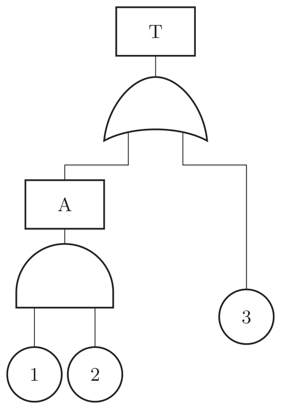
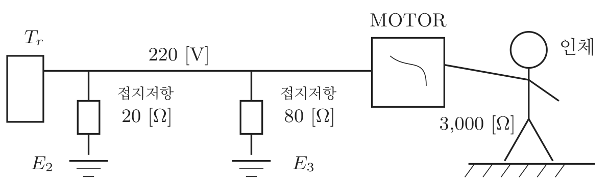

2022년 1회 · 산업안전기사 필기 CBT 기출 재배열 전사 검수본
지면(PDF)과 대조 검수용 · 수식은 KaTeX 렌더 · 총 문항
제1과목 안전관리론
001빈출도 ★☆☆난이도 2·보통개념형safe_A_2022_01_001
다음 중 산업안전보건법령상 근로자에 대한 일반건강진단의 실시 시기가 올바르게 연결된 것은?
① 사무직에 종사하는 근로자 : 1년에 1회 이상
② 사무직에 종사하는 근로자 : 2년에 1회 이상
③ 사무직외의 업무에 종사하는 근로자 : 6월에 1회 이상
④ 사무직외의 업무에 종사하는 근로자 : 2년에 1회 이상
정답: 2
해설
사무직은 2년에 1회 이상, 그 밖의 근로자는 1년에 1회 이상이다.
건강진단의 종류와 주기
| 종류 | 대상 | 주기 |
|---|
| 일반건강진단 | 사무직 | 2년에 1회 이상 |
| 그 밖의 근로자 | 1년에 1회 이상 |
| 특수건강진단 | 유해인자 취급 근로자 | 유해인자별로 6개월 ~ 24개월 |
| 배치전 건강진단 | 특수건강진단 대상 업무에 배치하기 전 | |
| 수시건강진단 | 유해인자로 인한 증상을 보일 때 | |
| 임시건강진단 | 지방고용노동관서의 장이 명할 때 | |
오답 분석
① 사무직은 1년이 아니라 2년에 1회 이상이다.
③ 사무직 외의 근로자는 6개월이 아니라 1년에 1회 이상이다.
④ 사무직 외의 근로자를 2년에 1회로 하는 것도 틀리다.
관련 개념 · 암기
일반건강진단사무직이 더 뜸하다는 것 하나로 네 보기 가운데 둘이 걸러진다.
「사무직 2년, 그 밖 1년」이라는 짝 하나로 끝난다.
◈ 암기 사무직 2년, 그 밖 1년.
🃏 관련 암기카드
분류: — > — > 일반건강진단 · 원본 2014.03.02
002빈출도 ★☆☆난이도 1·쉬움개념형safe_A_2022_01_002
사고요인이 되는 정신적 요소 중 개성적 결함 요인에 해당하지 않는 것은?
① 방심 및 공상
② 도전적인 마음
③ 과도한 집착력
④ 다혈질 및 인내심 부족
정답: 1
해설
방심과 공상은 주의력의 문제(정신력과 관계되는 요소)이지 성격의 결함이 아니다.
사고요인이 되는 정신적 요소
| 갈래 | 내용 | |
|---|
| 개성적 결함 | 도전적인 마음 · 과도한 집착력 · 다혈질 및 인내심 부족 · 배타성 · 게으름 | 타고난 성격 |
| 정신력과 관계되는 요소 | 방심과 공상 · 주의력 부족 · 안전지식 부족 · 무기력 | 그때그때의 마음가짐 |
| 감정 | 안전의식의 부족 · 편집 · 극도의 우울 | |
오답 분석
② 도전적인 마음은 개성적 결함이다.
③ 과도한 집착력도 그렇다.
④ 다혈질 및 인내심 부족도 그렇다.
관련 개념 · 암기
사고의 정신적 요소개성은 「그 사람의 성격」이라 잘 바뀌지 않고, 방심은 「지금의 상태」라 그때그때 다르다.
셋은 성격을 가리키는 말이고 하나만 상태를 가리킨다.
◈ 암기 방심과 공상은 정신력 쪽.
🃏 관련 암기카드
분류: — > — > 정신적 요소 · 원본 2014.03.02
003빈출도 ★☆☆난이도 2·보통개념형safe_A_2022_01_003
다음 중 교육형태의 분류에 있어 가장 적절하지 않은 것은?
① 교육의도에 따라 형식적교육, 비형식적교육
② 교육성격에 따라 일반교육, 교양교육, 특수교육
③ 교육방법에 따라 가정교육, 학교교육, 사회교육
④ 교육내용에 따라 실업교육, 직업교육, 고등교육
정답: 3
해설
가정교육 · 학교교육 · 사회교육은 교육장소에 따른 분류다. 방법에 따른 것이 아니다.
교육형태의 분류
| 기준 | 분류 | |
|---|
| 교육의도 | 형식적 교육 · 비형식적 교육 | |
| 교육성격 | 일반교육 · 교양교육 · 특수교육 | |
| 교육장소 | 가정교육 · 학교교육 · 사회교육 | 「방법」이 아니다 |
| 교육내용 | 실업교육 · 직업교육 · 고등교육 | |
| 교육방법 | 강의식 · 토의식 · 실습식 | |
오답 분석
① 교육의도에 따른 형식적·비형식적 교육 분류는 맞다.
② 교육성격에 따른 분류도 맞다.
④ 교육내용에 따른 분류도 맞다.
관련 개념 · 암기
교육형태의 분류가정 · 학교 · 사회는 모두 「어디서」를 가리키는 말이다 —
「어떻게」를 묻는 방법과 어긋난다.
방법은 강의식 · 토의식 같은 말 이라야 한다.
◈ 암기 가정·학교·사회는 교육장소.
🃏 관련 암기카드
분류: — > — > 교육의 분류 · 원본 2014.03.02
004빈출도 ★☆☆난이도 1·쉬움개념형safe_A_2022_01_004
산업안전보건법령상 사업 내 안전.보건교육에서 근로자 정기 안전.보건교육의 교육내용에 해당하지 않은 것은? (단, 기타 산업안전보건법 및 일반관리에 관한 사항은 제외한다.)
① 건강증진 및 질병 예방에 관한 사항
② 산업보건 및 직업병 예방에 관한 사항
③ 유해.위험 작업환경 관리에 관한 사항
④ 작업공정의 유해.위험과 재해 예방대책에 관한 사항
정답: 4
해설
작업공정의 유해·위험과 재해 예방대책은 관리감독자 정기교육 내용이다.
근로자 정기 안전보건교육의 내용
| 내용 | |
|---|
| 산업안전 및 사고 예방에 관한 사항 | |
| 산업보건 및 직업병 예방에 관한 사항 | |
| 건강증진 및 질병 예방에 관한 사항 | |
| 유해·위험 작업환경 관리에 관한 사항 | |
| 위험성평가에 관한 사항 | |
| 직무스트레스 예방과 관리에 관한 사항 | |
| 직장 내 괴롭힘, 고객의 폭언 등으로 인한 건강장해 예방·관리에 관한 사항 | |
| 작업공정의 유해·위험과 재해 예방대책 | 관리감독자 정기교육 내용 |
오답 분석
① 건강증진 및 질병 예방은 근로자 정기교육 내용이다.
② 산업보건 및 직업병 예방도 그렇다.
③ 유해·위험 작업환경 관리도 그렇다.
관련 개념 · 암기
사업 내 안전보건교육의 내용「작업공정」 · 「표준안전작업방법」 · 「부하 감독」 같은 말이 붙으면 관리감독자 쪽이다 —
근로자 정기교육은 「내 몸과 내 둘레」에 관한 것이 중심이다.
◈ 암기 작업공정의 유해·위험은 관리감독자.
🃏 관련 암기카드
분류: 안전보건관리 체제 > 선임·자격 > 정기 안전보건교육 · 원본 2014.03.02
005빈출도 ★☆☆난이도 2·보통개념형safe_A_2022_01_005
각자의 위험에 대한 감수성 향상을 도모하기 위하여 삼각 및 원포인트 위험예지훈련을 실시하는 것은?
① 1인 위험예지훈련
② 자문자답 위험예지훈련
③ TBM 위험예지훈련
④ 시나리오 역할연기훈련
정답: 1
해설
1인 위험예지훈련이다. 삼각 위험예지훈련과 원포인트 위험예지훈련을 써서 혼자 감수성을 기른다.
위험예지훈련의 갈래
| 갈래 | 무엇 | |
|---|
| 1인 위험예지훈련 | 삼각 · 원포인트 위험예지훈련으로 혼자 훈련 | 감수성 향상 · 이 문항 |
| TBM 위험예지훈련 | 작업 전 5 ~ 15분, 5 ~ 6명이 둘러서서 | 즉시즉응법 |
| 삼각 위험예지훈련 | 글 대신 ▲ 표시로 짧게 | 말이 서툰 사람도 |
| 원포인트 위험예지훈련 | 4라운드를 2 ~ 3분으로 줄여 한 가지만 | |
| 자문자답 카드 위험예지훈련 | 카드를 보며 스스로 묻고 답한다 | |
오답 분석
② 자문자답 위험예지훈련은 카드를 보며 스스로 묻고 답하는 방식이다.
③ TBM 위험예지훈련은 작업 전 짧게 둘러서서 하는 훈련이다.
④ 시나리오 역할연기훈련은 상황을 정해 놓고 배역을 맡아 하는 훈련이다.
관련 개념 · 암기
위험예지훈련「삼각」과 「원포인트」 두 낱말이 함께 나오면 1인 위험예지훈련이다.
둘 다 짧고 간단해 혼자 되풀이하기 좋은 방식 이기 때문이다.
◈ 암기 삼각 + 원포인트는 1인 위험예지훈련.
🃏 관련 암기카드
분류: 무재해운동 > 무재해·위험예지 > 위험예지훈련 · 원본 2014.03.02
006빈출도 ★☆☆난이도 1·쉬움개념형safe_A_2022_01_006
안전표시의 종류와 분류가 올바르게 연결된 것은?
① 금연 - 금지표지
② 낙하물 경고 - 지시표지
③ 안전모 착용 - 안내표지
④ 세안장치 - 경고표지
정답: 1
해설
금연은 금지표지다. 나머지 셋은 분류가 어긋나 있다.
안전보건표지의 네 갈래
| 갈래 | 모양과 색 | 보기 |
|---|
| 금지 | 흰 바탕에 빨간 원과 사선 | 금연 · 화기금지 · 출입금지 · 보행금지 · 차량통행금지 · 사용금지 · 탑승금지 · 물체이동금지 |
| 경고 | 노란 바탕에 검은 삼각형(또는 마름모) | 낙하물 경고 · 고압전기 경고 · 인화성물질 경고 |
| 지시 | 파란 원 | 안전모 착용 · 보안경 착용 · 방독마스크 착용 |
| 안내 | 녹색 | 세안장치 · 비상구 · 응급구호 · 들것 · 좌측통행 |
오답 분석
② 낙하물 경고는 지시표지가 아니라 경고표지다.
③ 안전모 착용은 안내표지가 아니라 지시표지다.
④ 세안장치는 경고표지가 아니라 안내표지다.
관련 개념 · 암기
안전보건표지의 종류색이 곧 갈래다 —
빨강은 금지, 노랑은 경고, 파랑은 지시, 녹색은 안내.
「~ 착용」은 시키는 말이라 지시, 「~ 장치 · 비상구」는 알려 주는 말이라 안내다.
◈ 암기 빨강 금지 · 노랑 경고 · 파랑 지시 · 녹색 안내.
🃏 관련 암기카드
분류: 보호구 > 안전모·안전대 > 안전보건표지 · 원본 2016.05.08
007빈출도 ★☆☆난이도 2·보통공식형safe_A_2022_01_007
레윈(Lewin)은 인간의 행동 특성을 「 B = f( PㆍE) 」 으로 표현 하였다. 변수 「E」가 의미하는 것으로 옳은 것은?
정답: 3
해설
E 는 Environment — 작업환경이다.
레빈의 법칙 $B = f ( P \cdot E )$
| 기호 | | |
|---|
| B | Behavior | 인간의 행동 |
| f | function | 함수 |
| P | Person | 소질(개체) — 나이 · 성격 · 지능 · 경험 · 심신 상태 |
| E | Environment | 환경 — 작업환경 · 인간관계 · 설비 |
오답 분석
① 연령은 P 에 드는 것이다.
② 성격도 그렇다.
④ 지능도 그렇다.
관련 개념 · 암기
레빈의 법칙보기 넷 가운데 셋(연령 · 성격 · 지능)이 모두 사람의 속성이라
하나만 남는다.
P 와 E 를 뒤바꿔 묻는 것이 이 유형의 흔한 꼴이다.
◈ 암기 E 는 환경, P 는 소질.
🃏 관련 암기카드
분류: 산업심리 > 인간의 행동 > 레빈의 법칙 · 원본 2014.05.25
008빈출도 ★☆☆난이도 1·쉬움개념형safe_A_2022_01_008
경보기가 울려도 기차가 오기까지 아직 시간이 있다고 판단하여 건널목을 건너다가 사고를 당했다. 다음 중 이 재해자의 행동성향으로 옳은 것은?
① 착오.착각
② 무의식행동
③ 억측판단
④ 지름길반응
정답: 3
해설
억측판단이다. 「괜찮겠지」하고 제멋대로 미루어 짐작 한 것이다.
불안전행동의 심리적 배후
| 무엇 | 보기 |
|---|
| 억측판단 | 근거 없이 「괜찮겠지」하고 짐작 | 경보기가 울려도 아직 오지 않겠지 · 이 문항 |
| 착오·착각 | 잘못 보거나 잘못 알았다 | 다른 스위치를 누른다 |
| 무의식 행동 | 버릇대로 몸이 먼저 움직였다 | |
| 지름길 반응 | 빨리 가려고 위험한 길로 | 울타리를 넘어 질러간다 |
| 생략행위 | 귀찮아 절차를 건너뛴다 | 보호구를 벗고 작업 |
오답 분석
① 착오·착각은 잘못 보거나 잘못 안 것이다.
② 무의식행동은 버릇대로 몸이 먼저 움직인 것이다.
④ 지름길반응은 빨리 가려고 위험한 길을 택한 것이다.
관련 개념 · 암기
억측판단정보는 제대로 받았는데(경보기 소리를 들었다) 해석을 제멋대로 한 것이 억측판단이다 —
정보 자체를 잘못 받은 착오와 갈린다.
◈ 암기 「괜찮겠지」는 억측판단.
🃏 관련 암기카드
분류: 산업심리 > 부주의·착오 > 불안전행동의 배후 · 원본 2014.05.25
009빈출도 ★☆☆난이도 1·쉬움개념형safe_A_2022_01_009
다음 중 일반적으로 시간의 변화에 따라 야간에 상승하는 생체리듬은?
정답: 2
해설
혈액의 수분과 염분량은 밤에 오르고 낮에 내린다.
생체리듬의 하루 변화
| 항목 | 밤에는 | |
|---|
| 혈액의 수분과 염분량 | 오른다 | 이 문항 |
| 체온 · 혈압 · 맥박수 | 내린다 | |
| 체중 | 내린다 | 저녁에 가장 무겁고 아침에 가장 가볍다 |
| 말초운동기능 | 내린다 | |
| 위액 분비 | 오른다 | |
오답 분석
① 맥박수는 밤에 내려간다.
③ 혈압도 그렇다.
④ 체중도 밤사이 줄어든다.
관련 개념 · 암기
생체리듬(바이오리듬)밤에는 몸이 쉬므로 「돌리는 것(체온 · 혈압 · 맥박)」은 내려가고 「담아 두는 것(수분 · 염분)」은 올라간다고 새긴다.
야간작업의 재해가 잦은 까닭이 여기 있다.
◈ 암기 밤에는 염분량이 오른다.
🃏 관련 암기카드
분류: 산업심리 > 부주의·착오 > 생체리듬 · 원본 2014.03.02
010빈출도 ★☆☆난이도 2·보통개념형safe_A_2022_01_010
다음 중 무재해운동의 이념에서 「선취의 원칙」을 가장 적절하게 설명한 것은?
① 사고의 잠재요인을 사후에 파악하는 것
② 근로자 전원의 일체감을 조성하여 참여하는 것
③ 위험요소를 사전에 발견, 파악하여 재해를 예방하거나 방지하는 것
④ 관리감독자 또는 경영층에서의 자발적 참여로 안전 활동을 촉진하는 것
정답: 3
해설
선취(先取)는 먼저 잡는다는 뜻이다. 행동하기 전에 위험을 찾아 없앤다.
무재해운동의 기본이념 3원칙
| 원칙 | | |
|---|
| 무(無)의 원칙 | 잠재위험요인을 뿌리에서부터 없앤다 | |
| 참가의 원칙 | 전원이 참가해 각자의 자리에서 문제를 푼다 | ②가 이 설명이다 |
| 선취(안전제일)의 원칙 | 행동하기 전에 위험을 미리 알아채 없앤다 | ③ — 이 문항 |
오답 분석
① 사후에 파악하는 것은 선취가 아니다.
② 전원의 일체감을 조성해 참여하는 것은 참가의 원칙이다.
④ 경영층의 자발적 참여도 참가의 원칙 쪽이다.
관련 개념 · 암기
무재해운동의 기본이념「선취」에서 「먼저 선(先)」이 곧 답을 준다 —
「사후에」라는 말이 붙은 보기는 반대다.
◈ 암기 선취는 사전에 발견.
🃏 관련 암기카드
분류: 안전보건관리 체제 > 선임·자격 > 무재해운동 3원칙 · 원본 2015.05.31
011빈출도 ★☆☆난이도 1·쉬움개념형safe_A_2022_01_011
산업안전보건법상 산업안전보건위원회의 사용자위원에 해당되지 않는 것은? (단, 각 사업장은 해당하는 사람을 선임하여 하는 대상 사업장으로 한다.)
① 안전관리자
② 해당 사업장의 부서의 장
③ 산업보건의
④ 명예산업안전감독관
정답: 4
해설
명예산업안전감독관은 근로자위원이다.
산업안전보건위원회의 구성
| 근로자위원 | 사용자위원 |
|---|
| 구성 | 근로자대표 | 해당 사업의 대표자 |
| 근로자대표가 지명하는 명예산업안전감독관 1명 | 안전관리자 1명 |
| 근로자대표가 지명하는 9명 이내의 해당 사업장 근로자 | 보건관리자 1명 |
| 산업보건의 1명 |
| 해당 사업의 대표자가 지명하는 9명 이내의 해당 사업장 부서의 장 |
| 회의 | 분기마다 정기회의, 필요할 때 임시회의 | |
오답 분석
① 안전관리자는 사용자위원이다.
② 해당 사업장의 부서의 장도 그렇다.
③ 산업보건의도 그렇다.
관련 개념 · 암기
산업안전보건위원회명예산업안전감독관은 근로자 쪽에서 지명 한다 —
이름에 「감독관」이 들어가 사용자 쪽으로 보이기 쉬운 것이 함정이다.
◈ 암기 명예산업안전감독관은 근로자위원.
🃏 관련 암기카드
분류: 안전보건관리 체제 > 선임·자격 > 산업안전보건위원회 · 원본 2015.05.31
012빈출도 ★☆☆난이도 1·쉬움개념형safe_A_2022_01_012
다음 중 안전보건교육의 단계별 종류에 해당하지 않는 것은?
① 지식교육
② 기초교육
③ 태도교육
④ 기능교육
정답: 2
해설
셋은 지식교육 · 기능교육 · 태도교육이다. 「기초교육」이라는 단계는 없다.
안전보건교육의 3단계
| 단계 | | |
|---|
| 1단계 | 지식교육 | 안전의식을 심어 주고 법규·기준을 알린다 · 강의식 |
| 2단계 | 기능교육 | 시범을 보이고 해 보게 한다 · 되풀이 · 시범실습식 |
| 3단계 | 태도교육 | 안전을 몸에 밴 습관으로 · 토의식 · 모범을 보인다 |
오답 분석
① 지식교육은 1단계다.
③ 태도교육은 3단계다.
④ 기능교육은 2단계다.
관련 개념 · 암기
안전보건교육의 단계「알고(지식) → 할 줄 알고(기능) → 늘 그렇게 한다(태도)」 세 걸음이다.
태도교육이 가장 어렵고 가장 오래 걸린다.
◈ 암기 지식 · 기능 · 태도.
🃏 관련 암기카드
분류: 안전보건교육 > 교육 이론 > 안전보건교육의 3단계 · 원본 2014.05.25
013빈출도 ★☆☆난이도 2·보통개념형safe_A_2022_01_013
안전교육 방법 중 OJT(On the Job Training) 특징과 거리가 먼 것은?
① 상호 신뢰 및 이해도가 높아진다.
② 개개인의 적절한 지도훈련이 가능하다.
③ 사업장의 실정에 맞게 실제적 훈련이 가능하다.
④ 관련 분야의 외부 전문가를 강사로 초빙하는 것이 가능하다.
정답: 4
해설
외부 전문가를 강사로 부르는 것은 Off JT의 장점이다.
OJT 와 Off JT
| OJT | Off JT |
|---|
| 어디서 | 일하는 자리에서 | 따로 자리를 마련해 |
| 누가 | 직속상사가 | 외부 전문가·전문 강사가 |
| 몇 명 | 한 사람 또는 소수 | 여럿을 한꺼번에 |
| 장점 | 현장 실정에 맞다 · 개별 지도 · 상호 신뢰가 두터워진다 | 조직적·체계적 · 전문가에게 배운다 · 여러 매체 |
오답 분석
① 상호 신뢰와 이해도가 높아지는 것은 OJT 의 특징이다.
② 개개인에 맞춘 지도훈련이 가능한 것도 그렇다.
③ 사업장 실정에 맞는 실제적 훈련이 가능한 것도 그렇다.
관련 개념 · 암기
OJT 와 Off JT「외부」 · 「전문가」 · 「다수」 · 「체계적」이라는 낱말이 나오면 Off JT 다 —
OJT 는 「우리 현장, 우리 상사, 나 한 사람」이 전부다.
◈ 암기 외부 전문가 초빙은 Off JT.
🃏 관련 암기카드
분류: 안전보건교육 > 교육 이론 > OJT 와 Off JT · 원본 2014.03.02
014빈출도 ★☆☆난이도 1·쉬움개념형safe_A_2022_01_014
모랄 서베이의 방법 중 태도조사법에 해당하지 않는 것은?
① 면접법
② 질문지법
③ 관찰법
④ 집단토의법
정답: 3
해설
관찰법은 관찰법(사례연구법 계열)이지 태도조사법이 아니다.
모랄 서베이(사기조사)의 방법
| 방법 | 내용 | |
|---|
| 태도조사법 | 면접법 · 질문지법 · 집단토의법 · 투사법 | 직접 물어본다 |
| 통계법 | 사고·결근·이직률 등의 자료를 분석 | |
| 사례연구법 | 관리상의 여러 실례를 조사 | |
| 관찰법 | 행동을 직접 관찰 | 태도조사법이 아니다 |
| 실험연구법 | 조건을 바꾸어 본다 | |
오답 분석
① 면접법은 태도조사법이다.
② 질문지법도 그렇다.
④ 집단토의법도 그렇다.
관련 개념 · 암기
모랄 서베이태도조사법은 「본인의 입으로 듣는」 방법이다 —
면접 · 질문지 · 집단토의 · 투사 넷이 모두 그렇다.
관찰은 밖에서 보는 것이라 갈래가 다르다.
◈ 암기 관찰법은 태도조사법이 아니다.
🃏 관련 암기카드
분류: 안전보건교육 > 토의법 > 모랄 서베이 · 원본 2013.08.18
015빈출도 ★☆☆난이도 2·보통개념형safe_A_2022_01_015
다음 중 강의안 구성 4단계 가운데 「제시(전개)」에 해당되는 설명으로 옳은 것은?
① 관심과 흥미를 가지고 심신의 여유를 주는 단계
② 과제를 주어 문제해결을 시키거나 습득시키는 단계
③ 교육내용을 정확하게 이해하였는가를 테스트 하는 단계
④ 상대의 능력에 따라 교육하고 내용을 확실하게 이해시키고 납득시키는 설명 단계
정답: 4
해설
제시(전개)는 설명하고 이해시키는 단계다.
강의안 구성의 4단계
| 단계 | | |
|---|
| 1 도입(준비) | 관심과 흥미를 갖게 하고 마음의 여유를 준다 | ① |
| 2 제시(전개) | 상대의 능력에 맞춰 설명하고 이해·납득시킨다 | ④ — 이 문항 |
| 3 적용(응용) | 과제를 주어 문제를 풀게 하거나 익히게 한다 | ② |
| 4 확인(총괄) | 정확히 이해했는지 확인한다 | ③ |
오답 분석
① 관심과 흥미를 갖게 하는 것은 도입 단계다.
② 과제를 주어 문제해결을 시키는 것은 적용 단계다.
③ 이해 여부를 테스트하는 것은 확인 단계다.
관련 개념 · 암기
교육의 진행 4단계네 보기가 네 단계에 하나씩 놓여 있다 —
「설명」이라는 낱말이 든 것이 제시다.
실기교육에서 시간 배분은 도입 5 · 제시 25 · 적용 20 · 확인 5분이 표준이다.
◈ 암기 제시는 설명하고 이해시키는 단계.
🃏 관련 암기카드
분류: 안전보건교육 > 교육계획·평가 > 교육의 4단계 · 원본 2013.08.18
016빈출도 ★★☆난이도 1·쉬움개념형safe_A_2022_01_016
다음 중 산업안전보건법령상 의무안전인증 대상 기계ㆍ기구 및 설비에 해당하지 않는 것은?
① 연삭기
② 압력용기
③ 롤러기
④ 고소(高所) 작업대
정답: 1
해설
연삭기 자체는 안전인증 대상이 아니다. 연삭기 덮개가 자율안전확인 대상 방호장치 일 뿐이다.
안전인증 대상 기계·기구 및 설비
| 대상 | |
|---|
| 프레스 · 전단기 및 절곡기 | |
| 크레인 · 리프트 · 곤돌라 · 고소작업대 | |
| 압력용기 | |
| 롤러기 · 사출성형기 | |
| 기계톱(이동식) | |
| 연삭기 | 안전인증 대상이 아니다 — 덮개가 자율안전확인 대상 방호장치 |
오답 분석
② 압력용기는 안전인증 대상이다.
③ 롤러기도 그렇다.
④ 고소작업대도 그렇다.
관련 개념 · 암기
안전인증 대상 기계아홉 가지가 「프·전·크·리·곤·압·롤·사·기(톱)·고」로 이어진다.
연삭기 · 목재가공용 둥근톱 · 동력식 수동대패는 기계 자체가 아니라 「방호장치」가 자율안전확인 대상이다.
◈ 암기 연삭기는 덮개만 대상.
🃏 관련 암기카드
분류: 안전점검·인증 > 안전인증·검사 > 안전인증 대상 기계 · 원본 2013.06.02 · 2014.08.17
017빈출도 ★☆☆난이도 2·보통개념형safe_A_2022_01_017
다음 중 산업재해 발생시 조치 순서로 가장 적절한 것은?
① 긴급처리 → 재해조사 → 원인결정 → 대책수립 → 실시계획 → 실시 → 평가
② 긴급처리 → 원인결정 → 재해조사 → 대책수립 → 실시 → 평가
③ 긴급처리 → 재해조사 → 원인결정 → 실시계획 → 실시 → 대책수립 → 평가
④ 긴급처리 → 실시계획 → 재해조사 → 대책수립 → 평가 → 실시
정답: 1
해설
긴급처리 → 재해조사 → 원인강구(결정) → 대책수립 → 대책실시계획 → 실시 → 평가다.
산업재해 발생 시 조치 순서
| 차례 | | |
|---|
| 1 | 긴급처리 | 기계 정지 · 피재자 구출 · 응급조치 · 2차 재해 방지 · 현장 보존 |
| 2 | 재해조사 | 사실을 있는 그대로 |
| 3 | 원인강구(결정) | 사람 · 물건 · 관리 |
| 4 | 대책수립 | 3E — 기술 · 교육 · 관리 |
| 5 | 대책실시계획 | |
| 6 | 실시 | |
| 7 | 평가 | |
오답 분석
② 원인결정이 재해조사보다 앞설 수 없다.
③ 대책수립이 실시보다 뒤에 올 수 없다.
④ 실시계획이 재해조사보다 앞설 수 없다.
관련 개념 · 암기
산업재해 발생 시의 조치「살리고 → 알아보고 → 까닭을 찾고 → 대책을 세우고 → 계획을 짜고 → 하고 → 따져 본다」는 자연스러운 흐름이다.
조사보다 원인이 앞서거나 대책보다 실시가 앞서면 말이 안 된다.
◈ 암기 긴급처리가 언제나 첫째.
🃏 관련 암기카드
분류: 재해조사 및 분석 > 재해조사·통계 > 재해 발생 시 조치 · 원본 2012.08.26
018빈출도 ★☆☆난이도 1·쉬움개념형safe_A_2022_01_018
불안전한 행동을 예방하기 위하여 수정해야 할 조건 중 시간의 소요가 짧은 것부터 장시간 소요되는 순서대로 올바르게 연결된 것은?
① 집단행동 - 개인행위 - 지식 - 태도
② 지식 - 태도 - 개인행위 - 집단행위
③ 태도 - 지식 - 집단행위 - 개인행위
④ 개인행위 - 태도 - 지식 - 집단행위
정답: 2
해설
지식 → 태도 → 개인행위 → 집단행위 순으로 오래 걸린다.
바꾸는 데 걸리는 시간
| 차례 | 무엇 | |
|---|
| 1 | 지식 | 가장 빠르다 — 알려 주면 된다 |
| 2 | 태도 | 마음을 바꾸는 데는 더 걸린다 |
| 3 | 개인행위 | 몸에 배게 해야 한다 |
| 4 | 집단행위 | 가장 오래 — 여럿의 분위기를 바꿔야 한다 |
오답 분석
① 집단행동을 가장 먼저 바꿀 수는 없다.
③ 태도가 지식보다 먼저 바뀌지는 않는다.
④ 개인행위가 지식보다 먼저 바뀌지도 않는다.
관련 개념 · 암기
행동 변화에 걸리는 시간「머리 → 마음 → 내 몸 → 우리」 순으로 멀어지고 오래 걸린다.
안전문화를 만드는 일이 가장 더딘 까닭이 여기 있다.
◈ 암기 지식 · 태도 · 개인행위 · 집단행위.
🃏 관련 암기카드
분류: 재해조사 및 분석 > 재해 발생 형태 > 행동 변화의 난이도 · 원본 2012.08.26
019빈출도 ★☆☆난이도 2·보통공식형safe_A_2022_01_019
다음 중 하인리히의 재해구성비율 「1 : 29 : 300」에서 「29」에 해당되는 사고발생비율로 옳은 것은?
① 8.8%
② 9.8%
③ 10.8%
④ 11.8%
정답: 1
해설
전체는 330건이므로 $\dfrac{29}{330} \times 100 \fallingdotseq 8.8$ [%] 다.
하인리히의 1 : 29 : 300
| 구분 | 건수 | 비율 |
|---|
| 중상 또는 사망 | 1 | 0.3% |
| 경상 | 29 | 8.8% — 이 문항 |
| 무상해사고(아차사고) | 300 | 90.9% |
| 합계 | 330 | 100% |
오답 분석
② 9.8% 는 계산과 맞지 않는다.
③ 10.8% 도 그렇다.
④ 11.8% 도 그렇다.
관련 개념 · 암기
하인리히의 재해구성비율분모가 330 이라는 것만 놓치지 않으면 된다 —
29 를 300 으로 나누면 9.7% 가 나와 ②로 끌린다.
버드의 1 : 10 : 30 : 600도 짝으로 잡아 둔다.
◈ 암기 29 ÷ 330 = 8.8%.
🃏 관련 암기카드
분류: 재해조사 및 분석 > 재해 손실비 > 재해구성비율 · 원본 2012.05.20
020빈출도 ★☆☆난이도 2·보통개념형safe_A_2022_01_020
다음 중 강의법에 대한 설명으로 틀린 것은?
① 많은 내용을 체계적으로 전달할 수 있다.
② 다수를 대상으로 동시에 교육할 수 있다.
③ 전체적인 전망을 제시하는데 유리하다.
④ 수강자 개개인의 학습진도를 조절할 수 있다.
정답: 4
해설
강의법은 한 사람이 여럿에게 같은 속도로 말하는 방식이라 개인별 진도를 맞출 수 없다.
강의법의 장점과 단점
| 장점 | 많은 내용을 체계적으로 전달 · 여럿을 한꺼번에 · 전체 전망을 제시 · 시간과 비용이 적게 든다 | |
| 단점 | 개인별 진도를 맞출 수 없다 · 일방적이라 참여가 적다 · 실기에 약하다 · 오래 기억되지 않는다 | ④ |
| 알맞은 때 | 지식교육 · 도입 단계 · 많은 인원 | |
오답 분석
① 많은 내용을 체계적으로 전달할 수 있는 것은 강의법의 장점이다.
② 여럿을 동시에 교육할 수 있는 것도 그렇다.
③ 전체적인 전망을 제시하는 데 유리한 것도 그렇다.
관련 개념 · 암기
강의법개인차를 살리는 것은 프로그램 학습법이나 OJT의 몫이다 —
강의법의 장점은 모두 「많이 · 빨리 · 싸게」 쪽에 있고
그 대가로 개인을 잃는다.
◈ 암기 강의법은 개인별 진도를 못 맞춘다.
🃏 관련 암기카드
분류: 재해조사 및 분석 > 재해 손실비 > 강의법 · 원본 2012.05.20
제2과목 인간공학 및 시스템안전공학
021빈출도 ★★☆난이도 3·어려움계산형safe_A_2022_01_021
[그림]과 같은 FT도에서 F1 = 0.015, F2 = 0.02, F3 =0.05 이면, 정상사상 T가 발생할 확률은 약 얼마인가?

① 0.0002
② 0.0283
③ 0.0503
④ 0.950
정답: 3
해설
A 는 AND 이므로 $0.015 \times 0.02 = 0.0003$ 이다. T 는 OR 이므로 $1 - ( 1 - 0.0003 ) ( 1 - 0.05 ) \fallingdotseq 0.0503$ 이다.
게이트별 확률 계산
| 게이트 | 식 | |
|---|
| AND | $P = P_{1} \times P_{2} \times \cdots$ | 모두 일어나야 하므로 곱한다 |
| OR | $P = 1 - ( 1 - P_{1} ) ( 1 - P_{2} ) \cdots$ | 하나라도 일어나면 되므로 여사상을 곱해 뺀다 |
| A(AND) | 0.015 × 0.02 = 0.0003 | |
| T(OR) | 1 − 0.9997 × 0.95 = 0.0503 | |
오답 분석
① 0.0002 는 계산과 맞지 않는다.
② 0.0283 도 그렇다.
④ 0.950 은 3번 사상이 일어나지 않을 확률이다.
관련 개념 · 암기
FT 의 확률 계산OR 은 확률이 작을 때 「그냥 더한 값」과 거의 같다 —
0.0003 + 0.05 = 0.0503.
AND 에서 나온 0.0003 이 워낙 작아 결과를 거의 바꾸지 못한다는 점도 눈여겨볼 만하다.
◈ 암기 AND 는 곱하고 OR 은 여사상으로.
🃏 관련 암기카드
분류: 결함수분석 > FTA 기호·구조 > FTA 확률 계산 · 원본 2013.08.18 · 2020.08.22
022빈출도 ★☆☆난이도 1·쉬움개념형safe_A_2022_01_022
다음의 결함수분석(FTA) 절차에서 가장 먼저 수행해야 하는 것은?
① cut set을 구한다.
② Top 사상을 정의한다.
③ minimal cut set을 구한다.
④ FT(fault tree)도를 작성한다.
정답: 2
해설
정상사상(Top event)을 정의 하는 것이 먼저다. 무엇을 막을지 정해야 나무를 그릴 수 있다.
FTA 의 절차
| 차례 | | |
|---|
| 1 | 정상사상(Top event)을 정의한다 | 구체적이고 명확하게 |
| 2 | 시스템을 이해하고 자료를 모은다 | |
| 3 | FT 도를 작성한다 | 논리게이트로 |
| 4 | 컷셋을 구한다 | |
| 5 | 미니멀 컷셋을 구한다 | 불 대수로 간소화 |
| 6 | 정성적·정량적으로 평가하고 대책을 세운다 | |
오답 분석
① 컷셋을 구하는 것은 FT 도를 그린 뒤의 일이다.
③ 미니멀 컷셋은 컷셋을 구한 뒤에 얻는다.
④ FT 도 작성도 정상사상을 정한 뒤의 일이다.
관련 개념 · 암기
FTA 의 절차FTA 는 「결과에서 원인으로 거슬러 올라가는」 연역적 기법이다 —
출발점인 결과(정상사상)를 정하지 않고는 아무것도 시작할 수 없다.
◈ 암기 정상사상 정의가 첫걸음.
🃏 관련 암기카드
분류: 결함수분석 > FTA 기호·구조 > FTA 절차 · 원본 2013.06.02
023빈출도 ★☆☆난이도 1·쉬움개념형safe_A_2022_01_023
다음 중 FTA에서 특정 조합의 기본사상들이 동시에 결함을 발생하였을 때 정상사상을 일으키는 기본사상의 집합을 무엇이라 하는가?
① cut set
② error set
③ path set
④ success set
정답: 1
해설
컷셋(cut set)이다. 함께 일어나면 정상사상이 나는 기본사상의 모임이다.
컷셋과 패스셋
| 컷셋(cut set) | 패스셋(path set) |
|---|
| 무엇 | 동시에 일어나면 정상사상이 나는 기본사상의 집합 | 모두 일어나지 않으면 정상사상이 나지 않는 기본사상의 집합 |
| 최소 집합 | 미니멀 컷셋 | 미니멀 패스셋 |
| 나타내는 것 | 시스템의 위험성 | 시스템의 신뢰성 |
오답 분석
② 「error set」이라는 말은 쓰지 않는다.
③ 패스셋은 정상사상이 나지 않게 하는 집합이다.
④ 「success set」도 쓰지 않는 말이다.
관련 개념 · 암기
컷셋과 패스셋컷(cut)은 「자른다」 —
그 조합이 일어나면 시스템이 끊긴다.
패스(path)는 「지나간다」 —
그 길이 살아 있으면 시스템도 산다.
◈ 암기 동시에 일어나면 컷셋.
🃏 관련 암기카드
분류: 결함수분석 > FTA 기호·구조 > 컷셋과 패스셋 · 원본 2013.03.10
024빈출도 ★☆☆난이도 2·보통개념형safe_A_2022_01_024
다음 중 인간-기계시스템의 설계시 시스템의 기능을 정의하는 단계는?
① 제1단계 : 시스템의 목표와 성능명세서 결정
② 제2단계 : 시스템의 정의
③ 제3단계 : 기본 설계
④ 제4단계 : 인터페이스 설계
정답: 2
해설
제2단계 시스템의 정의에서 목표를 이루려면 어떤 기능이 필요한가를 정한다.
인간-기계 시스템 설계의 6단계
| 단계 | | |
|---|
| 1 | 목표와 성능명세의 결정 | 무엇을 이룰 것인가 |
| 2 | 시스템의 정의 | 그러려면 어떤 기능이 필요한가 · 이 문항 |
| 3 | 기본설계 | 기능 할당 · 인간 성능 요건 명세 · 직무분석 · 작업설계 |
| 4 | 계면(인터페이스) 설계 | 표시장치와 조종장치 |
| 5 | 촉진물(보조물) 설계 | 지시서 · 설명서 · 훈련도구 |
| 6 | 시험과 평가 | |
오답 분석
① 제1단계는 목표와 성능명세를 정하는 단계다.
③ 제3단계 기본설계에서는 기능을 사람과 기계에 나눈다.
④ 제4단계는 표시장치와 조종장치를 설계하는 단계다.
관련 개념 · 암기
인간-기계 시스템 설계의 단계「목표(1) → 기능(2) → 기능의 배분과 직무(3) → 계면(4) → 보조물(5) → 평가(6)」로 좁혀 든다.
「기능을 정의」한다는 말이 그대로 2단계의 이름이다.
◈ 암기 기능 정의는 2단계.
🃏 관련 암기카드
분류: 정보입력표시 > 표시장치·조종장치 > 인간-기계 시스템 설계 · 원본 2013.08.18
025빈출도 ★☆☆난이도 2·보통개념형safe_A_2022_01_025
다음 중 layout의 원칙으로 가장 올바른 것은?
① 운반작업을 수작업화 한다.
② 중간 중간에 중복 부분을 만든다.
③ 인간이나 기계의 흐름을 라인화 한다.
④ 사람이나 물건의 이동거리를 단축하기 위해 기계 배치를 분산화 한다.
정답: 3
해설
흐름을 한 줄로 이어(라인화) 되돌아가거나 엇갈리지 않게 한다.
배치(layout)의 원칙
| 원칙 | |
|---|
| 사람이나 기계의 흐름을 라인화한다 | 이 문항 — 되돌아가거나 엇갈리지 않게 |
| 운반작업을 기계화한다 | 「수작업화」가 아니다 |
| 중복 부분을 없앤다 | 「만든다」가 아니다 |
| 기계 배치를 집중화(요약)한다 | 「분산화」가 아니다 — 이동거리를 줄이려면 모아야 한다 |
| 사람이나 물건의 이동거리를 줄인다 | |
오답 분석
① 운반작업은 수작업이 아니라 기계화한다.
② 중복 부분은 만드는 것이 아니라 없앤다.
④ 이동거리를 줄이려면 분산이 아니라 집중해야 한다.
관련 개념 · 암기
배치(layout)의 원칙네 원칙이 「라인화 · 기계화 · 중복 제거 · 집중화」다.
보기 셋이 모두 그 반대로 뒤집혀 있으므로 하나만 남는다.
◈ 암기 흐름은 라인화.
🃏 관련 암기카드
분류: — > — > 배치(layout)의 원칙 · 원본 2013.06.02
026빈출도 ★☆☆난이도 1·쉬움개념형safe_A_2022_01_026
다음 중 인간공학 연구조사에 사용하는 기준의 구비조건과 가장 거리가 먼 것은?
① 적절성
② 무오염성
③ 다양성
④ 기준 척도의 신뢰성
정답: 3
해설
넷은 적절성 · 신뢰성 · 무오염성 · 기준척도의 민감도다. 「다양성」은 들지 않는다.
연구(측정) 기준의 네 요건
| 요건 | 뜻 |
|---|
| 적절성(타당성) | 의도한 목적에 들어맞는가 |
| 신뢰성(반복성) | 되풀이해도 같은 값이 나오는가 |
| 무오염성 | 재려는 것 말고 다른 변수가 끼어들지 않는가 |
| 기준척도의 민감도 | 차이를 가려낼 만큼 눈금이 잘게 나뉘어 있는가 |
| 다양성 | 요건이 아니다 |
오답 분석
① 적절성은 기준의 요건이다.
② 무오염성도 그렇다.
④ 기준 척도의 신뢰성도 그렇다.
관련 개념 · 암기
연구 기준의 요건네 요건은 모두 「하나를 제대로 재는가」를 따진다 —
「여러 가지를 재는가(다양성)」는 애초에 방향이 다른 말이다.
◈ 암기 적절성 · 신뢰성 · 무오염성 · 민감도.
🃏 관련 암기카드
분류: — > — > 연구 기준의 요건 · 원본 2013.06.02
027빈출도 ★☆☆난이도 2·보통개념형safe_A_2022_01_027
다음 중 가속도에 관한 설명으로 틀린 것은?
① 가속도란 물체의 운동 변화율이다.
② 1G는 자유 낙하하는 물체의 가속도인 9.8m/s2에 해당한다.
③ 선형가속도는 운동속도가 일정한 물체의 방향 변화율이다.
④ 운동방향이 전후방인 선형가속의 영향은 수직방향보다 덜하다.
정답: 3
해설
방향의 변화율은 각가속도다. 선형가속도는 속도의 크기가 바뀌는 비율이다.
가속도
| 가속도 | 물체의 운동(속도) 변화율 | |
| 1 G | 9.8 [m/s²] | 자유낙하 가속도 |
| 선형가속도 | 속도의 크기가 바뀌는 비율 | 「방향 변화율」이 아니다 |
| 각가속도 | 운동속도가 일정할 때 방향이 바뀌는 비율 | |
| 방향별 영향 | 전후방이 수직방향보다 덜하다 | 수직 가속은 혈액이 쏠려 위험 |
오답 분석
① 가속도가 운동 변화율인 것은 맞다.
② 1 G 가 9.8 [m/s²] 인 것도 맞다.
④ 전후방 선형가속의 영향이 수직방향보다 덜한 것도 맞다.
관련 개념 · 암기
가속도와 인체「선형」은 곧게 가는 것, 「각」은 도는 것이다 —
방향이 바뀌는 것은 도는 쪽이라 각가속도다.
사람은 위아래 가속에 가장 약하다는 것도 함께 잡아 둔다.
◈ 암기 방향 변화율은 각가속도.
🃏 관련 암기카드
분류: — > — > 가속도 · 원본 2013.06.02
028빈출도 ★☆☆난이도 3·어려움계산형safe_A_2022_01_028
발생확률이 각각 0.05, 0.08 인 두 결함사상이 AND 조합으로 연결된 시스템을 FTA로 분석하였을 때 이 시스템의 신뢰도는 약 얼마인가?
① 0.004
② 0.126
③ 0.874
④ 0.996
정답: 4
해설
정상사상의 확률은 $0.05 \times 0.08 = 0.004$ 이므로 신뢰도는 $1 - 0.004 = 0.996$ 이다.
고장확률과 신뢰도
| 식 | |
|---|
| AND 조합 | $P_{T} = 0.05 \times 0.08 = 0.004$ | 두 사상이 함께 일어나야 한다 |
| 신뢰도 | $R = 1 - P_{T} = 0.996$ | 고장나지 않을 확률 |
| OR 이었다면 | $P_{T} = 1 - 0.95 \times 0.92 = 0.126$ | ②가 그 값 |
오답 분석
① 0.004 는 정상사상의 확률이지 신뢰도가 아니다.
② 0.126 은 OR 조합일 때의 고장확률이다.
③ 0.874 는 OR 조합일 때의 신뢰도다.
관련 개념 · 암기
FTA 와 신뢰도보기 넷이 「AND 고장 · OR 고장 · OR 신뢰도 · AND 신뢰도」 네 값으로 짜여 있다 —
AND 인지 OR 인지, 고장인지 신뢰도인지 두 갈래를 모두 맞춰야 한다.
◈ 암기 신뢰도 = 1 − 고장확률.
🃏 관련 암기카드
분류: 시스템 위험분석 > PHA·FHA·FMEA > FTA 확률 계산 · 원본 2012.03.04
029빈출도 ★☆☆난이도 3·어려움계산형safe_A_2022_01_029
FMEA 분석 시 고장평점법의 5가지 평가요소에 해당하지 않는 것은?
① 고장발생의 빈도
② 신규설계의 가능성
③ 기능적 고장 영향의 중요도
④ 영향을 미치는 시스템의 범위
정답: 2
해설
다섯째는 신규설계의 정도이지 「가능성」이 아니다.
FMEA 고장평점법의 다섯 평가요소
| 평가요소 | | |
|---|
| 기능적 고장 영향의 중요도 | | |
| 영향을 미치는 시스템의 범위 | | |
| 고장발생의 빈도 | | |
| 고장방지의 가능성 | | |
| 신규설계의 정도 | 「신규설계의 가능성」이 아니다 | |
| 평점 | $C = ( C_{1} C_{2} C_{3} C_{4} C_{5} )^{1 / 5}$ | 다섯 값의 기하평균 |
오답 분석
① 고장발생의 빈도는 다섯 요소의 하나다.
③ 기능적 고장 영향의 중요도도 그렇다.
④ 영향을 미치는 시스템의 범위도 그렇다.
관련 개념 · 암기
FMEA 의 고장평점법「가능성」이 붙는 요소는 「고장방지의 가능성」 하나뿐이다 —
신규설계는 「얼마나 새로운 설계인가」를 재는 것이라 「정도」다.
◈ 암기 신규설계는 「정도」.
🃏 관련 암기카드
⚠ 점검 요망: 지문과 선택지 사이에 페이지가 바뀜 | 교차 오염 의심
분류: 시스템 위험분석 > PHA·FHA·FMEA > FMEA 고장평점법 · 원본 2021.08.14
030빈출도 ★☆☆난이도 2·보통공식형safe_A_2022_01_030
다음 중 설비보전을 평가하기 위한 식으로 틀린 것은 ?
① 성능가동률 = 속도가동률×정미가동률
② 시간가동률 = (부하시간-정지시간)/ 부하시간
③ 설비종합효율 = 시간가동률×성능가동률×양품율
④ 정미가동률 = (생산량×기준 주기시간 )/가동시간
정답: 4
해설
정미가동률은 $\dfrac{\text{생산량} \times \text{실제 주기시간}}{\text{가동시간}}$ 이다. 「기준 주기시간」이 아니라 「실제 주기시간」이다.
설비종합효율
| 식 | |
|---|
| 시간가동률 | $\dfrac{\text{부하시간} - \text{정지시간}}{\text{부하시간}}$ | |
| 속도가동률 | $\dfrac{\text{기준 주기시간}}{\text{실제 주기시간}}$ | |
| 정미가동률 | $\dfrac{\text{생산량} \times \text{실제 주기시간}}{\text{가동시간}}$ | 「기준」이 아니라 「실제」 |
| 성능가동률 | 속도가동률 × 정미가동률 | |
| 설비종합효율 | 시간가동률 × 성능가동률 × 양품률 | |
오답 분석
① 성능가동률이 속도가동률과 정미가동률의 곱인 것은 맞다.
② 시간가동률의 식도 맞다.
③ 설비종합효율의 식도 맞다.
관련 개념 · 암기
설비종합효율정미가동률은 「실제로 돌아간 시간의 비율」이므로
실제 주기시간을 곱해야 앞뒤가 맞는다.
기준 주기시간은 속도가동률의 분자 자리다.
◈ 암기 정미가동률에는 실제 주기시간.
🃏 관련 암기카드
분류: 신뢰성 > 보전 > 설비종합효율 · 원본 2013.08.18
031빈출도 ★★☆난이도 3·어려움계산형safe_A_2022_01_031
한 화학공장에는 24개의 공정제어회로가 있으며, 4000시간의 공정 가동 중 이 회로에는 14번의 고장이 발생하였고, 고장이 발생하였을 때마다 회로는 즉시 교체 되었다. 이 회로의 평균고장시간(MTTF)은 약 얼마인가?
① 6857시간
② 7571시간
③ 8240시간
④ 9800시간
정답: 1
해설
총 가동시간은 $24 \times 4 {,} 000 = 96 {,} 000$ 시간이다. $\mathrm{MTTF} = \dfrac{96 {,} 000}{14} \fallingdotseq 6 {,} 857$ 시간이다.
MTTF 의 셈
| 단계 | 셈 | |
|---|
| 총 가동시간 | 24 × 4,000 = 96,000 시간 | 회로 수를 곱해야 한다 |
| MTTF | 96,000 ÷ 14 = 6,857 시간 | |
| 고장률 | $\lambda = \dfrac{14}{96 {,} 000} = 1.46 \times 10^{-4}$ | /시간 |
오답 분석
② 7,571 시간은 계산과 맞지 않는다.
③ 8,240 시간도 그렇다.
④ 9,800 시간도 그렇다.
관련 개념 · 암기
평균 고장시간(MTTF)「24개」라는 수를 곱하지 않고 4,000 ÷ 14 로 가면 286 이 나와 보기에 없다 —
여러 개를 동시에 돌렸으면 총 가동시간은 개수 × 시간이다.
◈ 암기 총 가동시간 = 개수 × 시간.
🃏 관련 암기카드
분류: 신뢰성 > 신뢰도 계산 > MTTF · 원본 2011.03.20 · 2013.06.02
032빈출도 ★☆☆난이도 2·보통개념형safe_A_2022_01_032
다음 중 인체계측자료의 응용원칙에 있어 조절 범위에서 수용하는 통상의 범위는 몇 %tile 정도인가?
① 5 ~ 95%tile
② 20 ~ 80%tile
③ 30 ~ 70%tile
④ 40 ~ 60%tile
정답: 1
해설
5 ~ 95 백분위수를 잡는다. 쓰는 사람의 90%를 아우른다.
인체측정 자료의 백분위수
| 기준 | |
|---|
| 조절식 설계 | 5 ~ 95 %tile | 쓰는 사람의 90% · 이 문항 |
| 최대집단치 | 90 · 95 · 99 %tile | 작으면 못 쓰는 것 — 문 높이 |
| 최소집단치 | 1 · 5 · 10 %tile | 멀면 못 닿는 것 — 선반 높이 |
| 평균치 | 50 %tile | |
오답 분석
② 20 ~ 80 %tile 은 너무 좁아 쓰는 사람의 60%만 아우른다.
③ 30 ~ 70 %tile 은 더 좁다.
④ 40 ~ 60 %tile 은 거의 평균치에 가깝다.
관련 개념 · 암기
인체측정 자료의 응용원칙양 끝의 5%씩을 뺀 90%를 담는다 —
그 바깥까지 맞추려면 값이 지나치게 커지거나 작아져 비용이 급하게 오르기 때문이다.
◈ 암기 조절식은 5 ~ 95 %tile.
🃏 관련 암기카드
분류: 인간계측·작업공간 > 인체계측 > 인체측정 응용원칙 · 원본 2013.03.10
033빈출도 ★☆☆난이도 2·보통공식형safe_A_2022_01_033
다음 중 NIOSH lifting guideline에서 권장무게한계(RWL)산출에 사용되는 평가 요소가 아닌 것은?
① 수평거리
② 수직거리
③ 휴식시간
④ 비대칭각도
정답: 3
해설
휴식시간은 들지 않는다. 빈도(FM)는 들지만 휴식시간 자체는 인자가 아니다.
권장무게한계(RWL)의 여섯 계수
| 계수 | 무엇 | |
|---|
| HM | 수평거리 | 몸에서 짐까지 |
| VM | 수직거리 | 드는 높이 |
| DM | 이동거리 | 드는 높이의 변화 |
| AM | 비대칭각도 | 몸통이 비틀린 정도 |
| FM | 빈도 | 분당 몇 번 |
| CM | 커플링(손잡이) | 쥐기 좋은가 |
| 식 | $\mathrm{RWL} = 23 \times HM \times VM \times DM \times AM \times FM \times CM$ | 기준 23 [kg] |
오답 분석
① 수평거리는 RWL 의 계수다.
② 수직거리도 그렇다.
④ 비대칭각도도 그렇다.
관련 개념 · 암기
NIOSH 권장무게한계(RWL)여섯 계수를 「수평 · 수직 · 이동 · 비틀림 · 빈도 · 손잡이」로 붙든다.
모두 「짐과 몸의 관계」이지
「쉬는 시간」처럼 작업 밖의 조건은 들지 않는다.
◈ 암기 휴식시간은 RWL 계수가 아니다.
🃏 관련 암기카드
분류: 인간계측·작업공간 > 작업공간·자세 > 권장무게한계 · 원본 2012.05.20
034빈출도 ★☆☆난이도 3·어려움계산형safe_A_2022_01_034
건습구도온도계에서 건구온도가 24℃이고, 습구온도가 20℃일 때 Oxford 지수는 얼마인가?
① 20.6℃
② 21.0℃
③ 23.0℃
④ 23.4℃
정답: 1
해설
$WD = 0.85 W + 0.15 D = 0.85 \times 20 + 0.15 \times 24 = 20.6$ [℃] 다.
열환경 지수
| 지수 | 식 | |
|---|
| 옥스퍼드 지수(WD) | $WD = 0.85 W + 0.15 D$ | W 는 습구, D 는 건구 · 습구에 크게 기운다 |
| 습구흑구온도지수(WBGT) | 옥외(햇빛 있음): 0.7 자연습구 + 0.2 흑구 + 0.1 건구 | |
| 옥내: 0.7 자연습구 + 0.3 흑구 | |
| 불쾌지수 | 0.72(건구 + 습구) + 40.6 | |
오답 분석
② 21.0 [℃] 는 계산과 맞지 않는다.
③ 23.0 [℃] 도 그렇다.
④ 23.4 [℃] 는 계수를 뒤바꾼 값이다.
관련 개념 · 암기
옥스퍼드 지수(WD)계수 0.85 가 습구에 붙는다 —
더울 때 사람을 괴롭히는 것은 온도보다 습도 이기 때문이다.
0.15 를 건구에 붙이면 23.4 가 나와 ④로 끌린다.
◈ 암기 습구 0.85, 건구 0.15.
🃏 관련 암기카드
분류: 작업환경관리 > 온열·조명·진동 > 옥스퍼드 지수 · 원본 2012.05.20
035빈출도 ★☆☆난이도 1·쉬움개념형safe_A_2022_01_035
불안전한 행동을 유발하는 요인 중 인간의 생리적 요인이 아닌 것은?
정답: 4
해설
주의력은 심리적(정신적) 요인이다.
불안전행동의 요인
| 갈래 | 보기 | |
|---|
| 생리적 요인 | 근력 · 반응시간 · 감지능력 · 시력 · 청력 · 피로 | 몸의 능력 |
| 심리적 요인 | 주의력 · 착오 · 억측판단 · 무의식 행동 · 정서 불안 | 마음의 상태 |
| 환경적 요인 | 조명 · 소음 · 온도 · 작업공간 | |
오답 분석
① 근력은 생리적 요인이다.
② 반응시간도 그렇다.
③ 감지능력도 그렇다.
관련 개념 · 암기
불안전행동의 요인재고 잴 수 있는 몸의 능력은 생리, 마음의 상태는 심리다.
「주의력」만 눈금으로 잴 수 없는 말이라 갈린다.
◈ 암기 주의력은 심리적 요인.
🃏 관련 암기카드
분류: 정보입력표시 > 동작·반응 법칙 > 생리적 요인 · 원본 2012.05.20
036빈출도 ★☆☆난이도 2·보통개념형safe_A_2022_01_036
금속세정작업장에서 실시하는 안전성 평가단계를 다음과 같이 5가지로 구분할 때 다음 중 4단계에 해당 하는 것은?
- 재평가 - 안전대책 - 정량적 평가
- 정성적 평가 - 관계 자료의 작성준비
① 안전대책
② 정성적 평가
③ 정량적 평가
④ 재평가
정답: 1
해설
차례대로 놓으면 관계 자료의 작성준비 → 정성적 평가 → 정량적 평가 → 안전대책 → 재평가이므로 4단계는 안전대책이다.
안전성 평가의 6단계
| 단계 | | |
|---|
| 1 | 관계 자료의 작성준비 | 도면 · 목록 · 물성 자료 |
| 2 | 정성적 평가 | 입지조건 · 공장 내 배치 · 건조물 · 소방설비 · 원재료 · 공정 |
| 3 | 정량적 평가 | 물질 · 용량 · 온도 · 압력 · 조작 다섯을 점수로 |
| 4 | 안전대책 | 설비대책 · 관리적 대책 · 이 문항 |
| 5 | 재해정보에 의한 재평가 | |
| 6 | FTA 에 의한 재평가 | |
오답 분석
② 정성적 평가는 2단계다.
③ 정량적 평가는 3단계다.
④ 재평가는 5단계 이후다.
관련 개념 · 암기
안전성 평가의 단계「자 · 정성 · 정량 · 대책 · 재 · 재」 여섯 글자로 붙든다.
이 문항은 5단계로 줄여 물었으므로 두 재평가를 하나로 본 것이다.
◈ 암기 4단계는 안전대책.
🃏 관련 암기카드
분류: 정보입력표시 > 표시장치·조종장치 > 안전성 평가의 6단계 · 원본 2012.05.20
037빈출도 ★☆☆난이도 3·어려움계산형safe_A_2022_01_037
인간의 반응시간을 조사하는 실험에서 0.1, 0.2, 0.3, 0.4 의 점등확률을 갖는 4개의 전등이 있다. 이 자극 전등이 전달하는 정보량은 약 얼마인가?
① 2.42 bit
② 2.16 bit
③ 1.85 bit
④ 1.53 bit
정답: 3
해설
$H = \sum p_{i} \log_{2} \dfrac{1}{p_{i}}$ 이다. $0.1 \times 3.32 + 0.2 \times 2.32 + 0.3 \times 1.74 + 0.4 \times 1.32 \fallingdotseq 1.85$ [bit] 다.
정보량의 셈
| 확률 | $\log_{2} ( 1 / p )$ | 곱 |
|---|
| 0.1 | 3.32 | 0.332 |
| 0.2 | 2.32 | 0.464 |
| 0.3 | 1.74 | 0.522 |
| 0.4 | 1.32 | 0.528 |
| 합 | | 1.85 [bit] |
오답 분석
① 2.42 [bit] 는 계산과 맞지 않는다.
② 2.16 [bit] 도 그렇다.
④ 1.53 [bit] 도 그렇다.
관련 개념 · 암기
정보량(information)확률이 모두 같으면 $H = \log_{2} 4 = 2$
[bit] 가 최대다 —
치우쳐 있으면 그보다 작아지므로 답은 2 보다 작아야 한다.
①②가 그것만으로 걸러진다.
◈ 암기 $H = \sum p_{i} \log_{2} ( 1 / p_{i} )$.
🃏 관련 암기카드
분류: 정보입력표시 > 동작·반응 법칙 > 정보량 · 원본 2012.03.04
038빈출도 ★☆☆난이도 2·보통개념형safe_A_2022_01_038
다음 중 고장형태와 영향분석(FMEA)에 관한 설명으로 틀린 것은?
① 각 요소가 영향의 해석이 가능하기 때문에 동시에 2가지 이상의 요소가 고장 나는 경우에 적합하다.
② 해석영역이 물체에 한정되기 때문에 인적원인 해석이 곤란하다.
③ 양식이 간단하여 특별한 훈련 없이 해석이 가능하다.
④ 시스템 해석의 기법은 정성적, 귀납적 분석법 등에 사용한다.
정답: 1
해설
FMEA 는 한 번에 부품 하나의 고장만 본다. 둘 이상이 동시에 고장 나는 경우에는 맞지 않는다.
FMEA 의 특징
| 무엇 | 부품의 고장 형태와 그것이 시스템에 미치는 영향을 표로 정리 | 정성적 · 귀납적 |
| 장점 | 양식이 간단하고 특별한 훈련 없이 쓸 수 있다 | |
| 단점 | 두 가지 이상이 동시에 고장 나는 경우에는 맞지 않는다 | ① |
| 해석 영역이 물체에 한정되어 인적 원인 해석이 어렵다 | |
| FTA 와 다른 점 | FMEA 는 원인에서 결과로(귀납), FTA 는 결과에서 원인으로(연역) | |
오답 분석
② 해석 영역이 물체에 한정되어 인적 원인 해석이 어려운 것은 맞다.
③ 양식이 간단해 특별한 훈련 없이 해석할 수 있는 것도 맞다.
④ 정성적·귀납적 분석법인 것도 맞다.
관련 개념 · 암기
FMEA(고장형태와 영향분석)FMEA 는 부품 목록을 한 줄씩 짚어 「이것이 고장 나면?」을 묻는다 —
표의 한 줄이 부품 하나이므로 동시 고장은 담기지 않는다.
그것을 다루려면 FTA로 간다.
◈ 암기 FMEA 는 동시 고장에 약하다.
🃏 관련 암기카드
분류: 정보입력표시 > 표시장치·조종장치 > FMEA · 원본 2012.03.04
039빈출도 ★☆☆난이도 1·쉬움개념형safe_A_2022_01_039
인간의 감각 중 반응시간이 가장 빠른 것은?
정답: 3
해설
청각이다. 약 0.17초로 가장 빠르다.
감각별 반응시간
| 감각 | 반응시간 [초] | |
|---|
| 청각 | 0.17 | 가장 빠르다 |
| 촉각 | 0.18 | |
| 시각 | 0.20 | |
| 미각 | 0.29 | |
| 통각 | 0.70 | 가장 느리다 |
오답 분석
① 시각은 약 0.20초다.
② 통각은 약 0.70초로 가장 느리다.
④ 미각은 약 0.29초다.
관련 개념 · 암기
감각의 반응시간「청 · 촉 · 시 · 미 · 통」 순으로 느려진다.
경보를 소리로 주는 까닭이자
눈이 이미 바쁠 때 청각 표시장치를 쓰는 까닭이다.
◈ 암기 청각이 가장 빠르다.
🃏 관련 암기카드
분류: 정보입력표시 > 동작·반응 법칙 > 감각의 반응시간 · 원본 2011.08.21
040빈출도 ★☆☆난이도 2·보통개념형safe_A_2022_01_040
산업안전보건법상 근로자가 상시로 정밀작업을 하는 장소의 작업면 조도기준으로 옳은 것은?
① 75럭스(lux) 이상
② 150럭스(lux) 이상
③ 300럭스(lux) 이상
④ 750럭스(lux) 이상
정답: 3
해설
정밀작업은 300 [lux] 이상이다.
작업면의 조도기준
| 작업 | 조도 | |
|---|
| 초정밀작업 | 750 [lux] 이상 | |
| 정밀작업 | 300 [lux] 이상 | 이 문항 |
| 보통작업 | 150 [lux] 이상 | |
| 그 밖의 작업 | 75 [lux] 이상 | |
오답 분석
① 75 [lux] 이상은 그 밖의 작업 기준이다.
② 150 [lux] 이상은 보통작업 기준이다.
④ 750 [lux] 이상은 초정밀작업 기준이다.
관련 개념 · 암기
작업면의 조도기준「750 · 300 · 150 · 75」 네 숫자다 —
아래에서부터 75 를 두 배씩 올린 값(75 → 150 → 300)에 750 만 따로 붙는다고 새기면 외우기 쉽다.
◈ 암기 초정밀 750, 정밀 300, 보통 150, 그 밖 75.
🃏 관련 암기카드
분류: 정보입력표시 > 시각 > 작업면 조도 · 원본 2011.08.21
제3과목 기계위험방지기술
041빈출도 ★☆☆난이도 2·보통공식형safe_A_2022_01_041
다음 중 목재 가공용 둥근톱에서 반발방지를 방호하기 위한 분할날의 설치조건이 아닌 것은?
① 톱날과의 간격은 12mm 이내
② 톱날 후면날의 2/3 이상 방호
③ 분할날 두께는 둥근톱 두께의 1.1배 이상
④ 덮개 하단과 가공재 상면과의 간격은 15mm 이내로 조정
정답: 4
해설
덮개 하단과 가공재 윗면의 간격 8 [mm] 이내는 날접촉예방장치(덮개)의 조건이지 분할날의 조건이 아니다.
목재가공용 둥근톱의 방호장치
| 장치 | 조건 | |
|---|
| 분할날(반발예방장치) | 톱날과의 간격 12 [mm] 이내 | |
| 톱날 후면날의 2/3 이상을 방호 | |
| 두께는 톱날 두께의 1.1배 이상, 톱날의 치진폭보다 작을 것 | |
| 최소길이는 $\dfrac{\pi D}{6}$ | 톱날 원주의 1/6 |
| 날접촉예방장치(덮개) | 덮개 하단과 가공재 윗면의 간격 8 [mm] 이내 | 분할날의 조건이 아니다 |
| 덮개 하단과 테이블 사이 25 [mm] 이내 | |
오답 분석
① 톱날과의 간격 12 [mm] 이내는 분할날의 조건이다.
② 톱날 후면날의 2/3 이상 방호도 그렇다.
③ 두께가 톱날 두께의 1.1배 이상인 것도 그렇다.
관련 개념 · 암기
목재가공용 둥근톱의 분할날분할날은 켠 자리가 다시 오므라들어 톱을 물지 않게 벌려 주는 쇳조각이다 —
톱날 뒤쪽에 붙는다.
덮개는 톱날 위를 덮는 것이라 「가공재 윗면과의 간격」을 말한다.
◈ 암기 덮개 하단 8 [mm] 는 덮개 조건.
🃏 관련 암기카드
분류: 공작기계 > 목재가공 > 분할날 · 원본 2015.03.08
042빈출도 ★☆☆난이도 1·쉬움개념형safe_A_2022_01_042
드릴작업시 너트 또는 볼트머리와 접촉하는 면을 고르게 하기 위하여 깎는 작업을 무엇이라 하는가?
① 보링(boring)
② 리밍(reaming)
③ 스폿 페이싱(spot facing)
④ 카운터 싱킹(counter sinking)
정답: 3
해설
스폿 페이싱이다. 볼트머리가 닿을 자리를 평평하게 깎는다.
드릴링 머신의 작업
| 작업 | 무엇 | |
|---|
| 드릴링 | 구멍을 뚫는다 | |
| 보링 | 뚫린 구멍을 넓힌다 | |
| 리밍 | 구멍의 안쪽을 다듬어 정밀하게 | |
| 스폿 페이싱 | 볼트머리·너트가 닿을 자리를 평평하게 | 이 문항 |
| 카운터 싱킹 | 접시머리 나사가 묻히도록 원뿔 모양으로 | |
| 카운터 보링 | 볼트머리가 묻히도록 단이 지게 | |
| 태핑 | 구멍 안에 나사산을 낸다 | |
오답 분석
① 보링은 뚫린 구멍을 넓히는 작업이다.
② 리밍은 구멍 안쪽을 다듬는 작업이다.
④ 카운터 싱킹은 접시머리 나사가 묻히도록 원뿔로 깎는 작업이다.
관련 개념 · 암기
드릴링 머신의 작업 종류「페이싱(facing)」은 「면을 낸다」는 뜻이고
「스폿」은 그 한 자리를 가리킨다 —
이름이 곧 「한 자리를 평평하게」다.
◈ 암기 평평하게 깎으면 스폿 페이싱.
🃏 관련 암기카드
분류: 공작기계 > 선반·밀링·드릴 > 드릴작업의 종류 · 원본 2015.03.08
043빈출도 ★☆☆난이도 3·어려움계산형safe_A_2022_01_043
선반으로 작업을 하고자 지름 30mm의 일감을 고정하고, 500rpm으로 회전시켰을 때 일감 표면의 원주 속도는 약 몇 m/s인가?
① 0.628
② 0.785
③ 23.56
④ 47.12
정답: 2
해설
$V = \dfrac{\pi D N}{1 {,} 000 \times 60} = \dfrac{\pi \times 30 \times 500}{60 {,} 000} \fallingdotseq 0.785$ [m/s] 다.
원주속도의 단위
| 구할 단위 | 식 | |
|---|
| [m/min] | $V = \dfrac{\pi D N}{1 {,} 000}$ | 이 문항이면 47.12 |
| [m/s] | $V = \dfrac{\pi D N}{1 {,} 000 \times 60}$ | 이 문항이면 0.785 |
| 주의 | D 는 [mm], N 은 [rpm] | |
오답 분석
① 0.628 [m/s] 는 계산과 맞지 않는다.
③ 23.56 [m/s] 는 자릿수가 어긋난다.
④ 47.12 는 [m/min] 값이다.
관련 개념 · 암기
선반의 원주속도[m/s] 를 물었는데 [m/min] 값이 보기에 함께 놓여 있다 —
60 으로 나누는 것을 잊으면 ④로 끌린다.
단위를 먼저 확인하는 것이 이 유형의 요령이다.
◈ 암기 [m/s] 는 60 으로 더 나눈다.
🃏 관련 암기카드
분류: 공작기계 > 선반·밀링·드릴 > 원주속도 · 원본 2014.08.17
044빈출도 ★☆☆난이도 2·보통개념형safe_A_2022_01_044
프레스 방호장치의 성능 기준에 대한 설명 중 잘못된 것은?
① 양수 조작식 방호장치에서 누름버튼의 상호간 내측거리는 300mm 이상으로 한다.
② 수인식 방호장치는 120SPM 이하의 프레스에 적합하다.
③ 양수 조작식 방호장치는 1행정 1정지기구를 갖춘 프레스 장치에 적합하다.
④ 수인식 방호장치에서 수인끈의 재료는 합성섬유로 직경이 2mm 이상이어야 한다.
정답: 4
해설
수인끈은 지름 4 [mm] 이상 이라야 한다.
프레스 방호장치의 성능기준
| 장치 | 기준 | |
|---|
| 양수조작식 | 누름버튼 사이의 안쪽 거리 300 [mm] 이상 | |
| 1행정 1정지기구를 갖춘 프레스에 쓴다 | |
| 수인식 | 수인끈은 합성섬유로 지름 4 [mm] 이상 | 「2 [mm]」가 아니다 |
| 분당 행정수 120 이하, 행정길이 50 [mm] 이상 | |
| 손쳐내기식 | 분당 행정수 120 이하, 행정길이 40 [mm] 이상 | |
오답 분석
① 누름버튼 안쪽 거리 300 [mm] 이상은 맞다.
② 수인식이 120 SPM 이하에 적합한 것도 맞다.
③ 양수조작식이 1행정 1정지기구를 갖춘 프레스에 적합한 것도 맞다.
관련 개념 · 암기
프레스 방호장치의 성능기준수인끈이 가늘면 끊어진다 —
손을 끌어낼 만큼 튼튼해야 하므로 4 [mm]다.
「300 · 120 · 4」 세 숫자가 이 문항의 뼈대를 이룬다.
◈ 암기 수인끈은 지름 4 [mm] 이상.
🃏 관련 암기카드
분류: 기계 일반 > 위험점·방호 > 프레스 방호장치 · 원본 2012.08.26
045빈출도 ★☆☆난이도 2·보통공식형safe_A_2022_01_045
안전율을 구하는 방법으로 옳은 것은?
① 안전율 = 허용응력 / 기초강도
② 안전율 = 허용응력 / 인장강도
③ 안전율 = 인장강도 / 허용응력
④ 안전율 = 안전하중 / 파단하중
정답: 3
해설
인장강도 ÷ 허용응력이다. 버티는 힘이 분자, 견디게 할 힘이 분모다.
안전율의 여러 꼴
| 식 | |
|---|
| $S = \dfrac{\text{인장강도} ( \text{극한강도} )}{\text{허용응력}}$ | 이 문항 |
| $S = \dfrac{\text{기초강도}}{\text{허용응력}}$ | |
| $S = \dfrac{\text{파단하중}}{\text{안전하중}}$ | 「안전하중 ÷ 파단하중」이 아니다 |
| $S = \dfrac{\text{파괴하중}}{\text{최대사용하중}}$ | |
| 언제나 | 큰 값이 분자 — 안전율은 1보다 크다 |
오답 분석
① 허용응력을 기초강도로 나누면 1보다 작아진다.
② 허용응력을 인장강도로 나누어도 마찬가지다.
④ 안전하중을 파단하중으로 나누어도 1보다 작다.
관련 개념 · 암기
안전율(안전계수)안전율은 「몇 배로 버티게 해 두었나」이므로 반드시 1보다 크다 —
작은 값을 분자에 놓은 보기 셋은 그것만으로 걸러진다.
◈ 암기 큰 값이 분자.
🃏 관련 암기카드
분류: 기계 일반 > 안전조건·안전율 > 안전율 · 원본 2012.08.26
046빈출도 ★☆☆난이도 2·보통개념형safe_A_2022_01_046
옥내에 통로를 설치할 때 통로 면으로부터 높이 얼마 이내에 장애물이 없어야 하는가?
① 1.5m
② 2.0m
③ 2.5m
④ 3.0m
정답: 2
해설
2 [m] 이내에 장애물이 없어야 한다.
통로의 설치기준
| 항목 | 기준 | |
|---|
| 옥내통로의 장애물 | 통로면에서 높이 2 [m] 이내에 없을 것 | 이 문항 |
| 통로의 조명 | 75 [lux] 이상 | |
| 통로의 구조 | 걸려 넘어지거나 미끄러질 위험이 없을 것 | |
| 기계 사이의 통로 폭 | 80 [cm] 이상 | |
오답 분석
① 1.5 [m] 는 사람이 지나기에 낮다.
③ 2.5 [m] 는 기준보다 높다.
④ 3.0 [m] 도 그렇다.
관련 개념 · 암기
옥내통로의 설치2 [m] 는 사람이 서서 다닐 수 있는 높이다 —
파이프나 덕트가 그 아래로 지나면 머리를 부딪친다.
조명 75 [lux] 와 짝으로 잡아 둔다.
◈ 암기 옥내통로는 높이 2 [m] 이내에 장애물 금지.
🃏 관련 암기카드
분류: 기계 일반 > 동력전달·통로 > 통로의 설치 · 원본 2012.08.26
047빈출도 ★☆☆난이도 3·어려움계산형safe_A_2022_01_047
롤러기의 물림점(Nip Point)의 가드 개구부의 간격이 15mm 일 때 가드와 위험점 간의 거리는 몇 mm 인가? (단, 위험점이 전동체는 아니다.)
정답: 3
해설
$Y = 6 + 0.15 X$ 이므로 $15 = 6 + 0.15 X$, $X = 60$ [mm] 다.
가드의 개구부 간격
| 구분 | 식 | |
|---|
| 위험점이 전동체가 아닐 때 | $Y = 6 + 0.15 X$ | X < 160 [mm] · 이 문항 |
| $Y = 30$ [mm] | $X \ge 160$ [mm] |
| 위험점이 전동체일 때 | $Y = 6 + 0.1 X$ | $X < 760$ [mm] |
| 기호 | X 는 가드와 위험점 사이의 거리, Y 는 개구부 간격 | |
오답 분석
① 15 [mm] 는 개구부 간격 자체다.
② 30 [mm] 는 계산과 맞지 않는다.
④ 90 [mm] 도 그렇다.
관련 개념 · 암기
가드의 개구부 간격멀수록 틈을 넓게 두어도 된다 —
손가락이 닿지 못하기 때문이다.
구하는 것이 X(거리)인지 Y(간격)인지를 먼저 가려야 한다.
◈ 암기 $Y = 6 + 0.15 X$.
🃏 관련 암기카드
분류: 기계 일반 > 위험점·방호 > 가드의 개구부 간격 · 원본 2012.08.26
048빈출도 ★☆☆난이도 2·보통개념형safe_A_2022_01_048
다음 중 진동 방지용 재료로 사용되는 공기스프링의 특징으로 틀린 것은?
① 공기량에 따라 스프링 상수의 조절이 가능하다.
② 측면에 대한 강성이 강하다.
③ 공기의 압축성에 의해 감쇠 특성이 크므로 미소 진동의 흡수도 가능하다.
④ 공기탱크 및 압축기 등의 설치로 구조가 복잡하고, 제작비가 비싸다.
정답: 2
해설
공기스프링은 옆으로 미는 힘에 약하다. 측면 강성이 「강하다」가 아니라 「약하다」다.
공기스프링의 특징
| 장점 | 공기량으로 스프링상수를 조절할 수 있다 | |
| 감쇠 특성이 커서 미소 진동도 흡수한다 | |
| 하중이 바뀌어도 높이를 일정하게 지킬 수 있다 | |
| 단점 | 측면 강성이 약하다 | 「강하다」가 아니다 |
| 공기탱크·압축기가 있어야 해 구조가 복잡하고 비싸다 | |
오답 분석
① 공기량으로 스프링상수를 조절할 수 있는 것은 맞다.
③ 감쇠 특성이 커서 미소 진동을 흡수하는 것도 맞다.
④ 구조가 복잡하고 제작비가 비싼 것도 맞다.
관련 개념 · 암기
공기스프링공기는 위아래로 눌리는 데는 잘 버티지만 옆으로 밀리면 주머니가 그대로 기운다 —
그래서 옆방향을 잡아 줄 다른 장치가 따로 필요 하다.
◈ 암기 공기스프링은 측면 강성이 약하다.
🃏 관련 암기카드
분류: 기계 일반 > 소음·진동 > 공기스프링 · 원본 2012.05.20
049빈출도 ★☆☆난이도 2·보통개념형safe_A_2022_01_049
산업안전보건법에 따라 사업주는 근로자가 안전하게 통행할 수 있도록 통로에 얼마 이상의 채광 또는 조명시설을 하여야 하는가?
① 50럭스
② 75럭스
③ 90럭스
④ 100럭스
정답: 2
해설
75 [lux] 이상이다.
조도기준
| 장소·작업 | 조도 | |
|---|
| 통로 | 75 [lux] 이상 | 이 문항 |
| 그 밖의 작업 | 75 [lux] 이상 | |
| 보통작업 | 150 [lux] 이상 | |
| 정밀작업 | 300 [lux] 이상 | |
| 초정밀작업 | 750 [lux] 이상 | |
오답 분석
① 50 [lux] 는 기준에 못 미친다.
③ 90 [lux] 는 기준값이 아니다.
④ 100 [lux] 도 그렇다.
관련 개념 · 암기
작업면과 통로의 조도통로의 조도는 「그 밖의 작업」과 같은 75 [lux]다 —
다니기만 하면 되므로 가장 낮은 값을 쓴다.
◈ 암기 통로는 75 [lux] 이상.
🃏 관련 암기카드
분류: 기계 일반 > 동력전달·통로 > 통로의 조명 · 원본 2012.05.20
050빈출도 ★★☆난이도 1·쉬움개념형safe_A_2022_01_050
다음 중 소성가공을 열간가공과 냉간가공으로 분류하는 가공온도의 기준은?
① 융해점 온도
② 공석점 온도
③ 공정점 온도
④ 재결정 온도
정답: 4
해설
재결정 온도를 기준으로 나눈다.
열간가공과 냉간가공
| 열간가공 | 냉간가공 |
|---|
| 온도 | 재결정 온도보다 높게 | 재결정 온도보다 낮게 |
| 가공력 | 작다 | 크다 |
| 가공경화 | 일어나지 않는다 | 일어난다 |
| 치수정밀도·표면 | 나쁘다 | 좋다 |
| 변형량 | 크게 줄 수 있다 | 제한된다 |
오답 분석
① 융해점은 녹는 온도이지 가공 구분의 기준이 아니다.
② 공석점은 강의 상변태에 관한 온도다.
③ 공정점도 상태도상의 점이다.
관련 개념 · 암기
열간가공과 냉간가공재결정 온도는 「찌그러진 결정이 다시 자리를 잡는」 온도다 —
그 위에서 가공하면 굳어지지 않아(가공경화 없음) 힘이 적게 들고, 그 아래면 굳어지며 단단해진다.
◈ 암기 기준은 재결정 온도.
🃏 관련 암기카드
분류: 기계 일반 > 소성가공 > 소성가공 · 원본 2012.05.20 · 2019.03.03
051빈출도 ★☆☆난이도 3·어려움계산형safe_A_2022_01_051
방호장치를 설치할 때 중요한 것은 기계의 위험점으로부터 방호장치까지의 거리이다. 위험한 기계의 동작을 제동시키는데 필요한 총소요시간을 t(초)라고 할 때 안전거리(S)의 산출식으로 옳은 것은?
① S = 1.0t mm/s
② S = 1.6t m/s
③ S = 2.8t mm/s
④ S = 3.2t m/s
정답: 2
해설
$S = 1.6 t$ [m/s] 다. 사람의 손이 뻗는 속도를 1.6 [m/s] 로 잡은 값이다.
안전거리의 계수
| 식 | |
|---|
| 일반 안전거리 | $S = 1.6 t$ [m] | t 는 총 제동 소요시간 [초] |
| 같은 뜻 | $S = 1 {,} 600 t$ [mm] | 1.6 [m/s] = 1,600 [mm/s] |
| 양수기동식 | $D_{m} = 1 {,} 600 T_{m}$ [mm] | |
| 양수조작식·광전자식 | $D = 1 {,} 600 ( T_{c} + T_{s} )$ [mm] | |
오답 분석
① 1.0t 는 기준 계수가 아니다.
③ 2.8t 도 아니다.
④ 3.2t 도 아니다.
관련 개념 · 암기
방호장치의 안전거리1.6 [m/s] 는 사람이 손을 뻗는 속도다 —
「그 시간 동안 손이 갈 수 있는 거리만큼 떼어 놓는다」는 것이 모든 안전거리 식의 뜻이다.
단위가 [m] 인지 [mm] 인지만 갈라 보면 된다.
◈ 암기 $S = 1.6 t$ [m].
🃏 관련 암기카드
분류: 기계 일반 > 위험점·방호 > 안전거리 · 원본 2012.03.04
052빈출도 ★☆☆난이도 3·어려움계산형safe_A_2022_01_052
SPM(stroke per minute)이 100 인 프레스에서 클러치 맞물림 개소수가 4인 경우 양수조작식 방호장치의 설치거리는 얼마인가?
① 160mm
② 240mm
③ 300mm
④ 720mm
정답: 4
해설
$T_{m} = ( \dfrac{1}{\text{클러치 개소수}} + \dfrac{1}{2} ) \times \dfrac{60 {,} 000}{\mathrm{SPM}} = ( 0.25 + 0.5 ) \times 600 = 450$ [ms] 다. $D = 1.6 \times 450 = 720$ [mm] 다.
양수조작식 방호장치의 설치거리
| 단계 | 셈 | |
|---|
| ① $T_{m}$ | $( \dfrac{1}{\text{클러치 개소수}} + \dfrac{1}{2} ) \times \dfrac{60 {,} 000}{\mathrm{SPM}}$ | [ms] |
| 이 문항 | (1/4 + 1/2) × 600 = 450 [ms] | |
| ② 안전거리 | $D = 1.6 T_{m}$ [mm] | 1.6 × 450 = 720 [mm] |
오답 분석
① 160 [mm] 는 계산과 맞지 않는다.
② 240 [mm] 도 그렇다.
③ 300 [mm] 는 누름버튼 사이의 거리 기준이다.
관련 개념 · 암기
양수조작식 방호장치의 설치거리$\dfrac{60 {,} 000}{\mathrm{SPM}}$ 은
1행정에 걸리는 시간 [ms]이다 —
SPM 100 이면 600 [ms].
거기에 「클러치가 물릴 때까지의 몫 + 반 행정」을 곱한 것이 $T_{m}$ 이다.
◈ 암기 $T_{m} = ( 1 / \text{클러치} + 1 / 2 ) \times 60 {,} 000 / \mathrm{SPM}$.
🃏 관련 암기카드
분류: 기계 일반 > 위험점·방호 > 양수조작식 안전거리 · 원본 2012.03.04
053빈출도 ★☆☆난이도 2·보통개념형safe_A_2022_01_053
산업안전보건법령에 따라 산업용 로봇을 운전하는 경우에 근로자가 로봇에 부딪칠 위험이 있을 때에는 안전매트 및 높이 얼마 이상의 방책을 설치하는 등 위험을 방지하기 위하여 필요한 조치를 하여야 하는가?
① 1.0m 이상
② 1.5m 이상
③ 1.8m 이상
④ 2.5m 이상
정답: 3
해설
높이 1.8 [m] 이상의 방책을 친다.
산업용 로봇의 안전조치
| 항목 | |
|---|
| 방책의 높이 | 1.8 [m] 이상 — 안전매트와 함께 |
| 교시 등의 작업 전 | 외부 전선의 피복 손상, 매니퓰레이터 작동 이상, 제동장치·비상정지장치 기능을 점검 |
| 작업 중 | 「운전 중 조작금지」 표지 · 작업자 간 신호 규정 |
| 수리·검사 등 | 운전을 정지하고 기동스위치에 잠금장치 |
오답 분석
① 1.0 [m] 는 사람이 넘기 쉽다.
② 1.5 [m] 도 기준에 못 미친다.
④ 2.5 [m] 는 기준보다 높다.
관련 개념 · 암기
산업용 로봇의 방호1.8 [m] 는 어른이 넘어 들어가기 어려운 높이다 —
로봇의 팔은 예고 없이 빠르게 움직이므로 사람이 그 반경 안에 들어가지 못하게 막는 것이 최선이다.
◈ 암기 로봇 방책은 1.8 [m] 이상.
🃏 관련 암기카드
분류: 산업용 기계 > 로봇·기타 > 산업용 로봇 · 원본 2013.03.10
054빈출도 ★☆☆난이도 1·쉬움개념형safe_A_2022_01_054
다음 중 컨베이어의 종류가 아닌 것은?
① 체인 컨베이어
② 롤러 컨베이어
③ 스크류 컨베이어
④ 그리드 컨베이어
정답: 4
해설
「그리드 컨베이어」라는 것은 없다.
컨베이어의 종류
| 종류 | |
|---|
| 벨트 컨베이어 | 가장 흔하다 |
| 체인 컨베이어 | |
| 롤러 컨베이어 | |
| 스크류(나사) 컨베이어 | 분체·곡물 |
| 버킷 컨베이어 | 위로 퍼 올린다 |
| 유체 컨베이어 | |
| 방호장치 | 비상정지장치 · 역주행방지장치(브레이크·역전방지장치) · 덮개 또는 울 · 건널다리 |
오답 분석
① 체인 컨베이어는 컨베이어의 한 종류다.
② 롤러 컨베이어도 그렇다.
③ 스크류 컨베이어도 그렇다.
관련 개념 · 암기
컨베이어의 종류와 방호장치이름이 곧 「무엇으로 나르는가」다 —
벨트 · 체인 · 롤러 · 나사 · 두레박(버킷) · 유체.
「그리드(격자)」는 나르는 수단이 될 수 없다.
◈ 암기 그리드 컨베이어는 없다.
🃏 관련 암기카드
분류: 산업용 기계 > 롤러기·원심기 > 컨베이어 · 원본 2012.08.26
055빈출도 ★☆☆난이도 1·쉬움개념형safe_A_2022_01_055
보일러 발생증기의 이상 현상이 아닌 것은?
① 역화(Back fire)
② 프라이밍(Priming)
③ 포밍(Forming)
④ 캐리오버(Carry over)
정답: 1
해설
역화는 연소 쪽의 이상이다. 발생증기의 이상이 아니다.
보일러의 이상현상
| 갈래 | 현상 | |
|---|
| 발생증기의 이상 | 프라이밍(priming) | 물이 갑자기 끓어올라 물방울이 증기에 섞인다 |
| 포밍(foaming) | 수면에 거품이 일어난다 — 불순물 때문 |
| 캐리오버(carry over) | 물방울·불순물이 증기와 함께 실려 나간다 |
| 연소의 이상 | 역화(back fire) | 불꽃이 연소실 밖으로 되나온다 · 이 문항 |
| 그 밖 | 수격작용(워터해머) | |
오답 분석
② 프라이밍은 발생증기의 이상현상이다.
③ 포밍도 그렇다.
④ 캐리오버도 그렇다.
관련 개념 · 암기
보일러의 이상현상셋은 「물이 증기 쪽으로 넘어가는」 현상이고
역화만 「불이 거꾸로 나오는」 현상이다.
프라이밍·포밍이 심하면 캐리오버로 이어진다는 관계도 함께 잡아 둔다.
◈ 암기 역화는 연소의 이상.
🃏 관련 암기카드
분류: 산업용 기계 > 보일러·압력용기 > 보일러의 이상현상 · 원본 2012.08.26
056빈출도 ★☆☆난이도 1·쉬움개념형safe_A_2022_01_056
비파괴 검사 방법 중 육안으로 결함을 검출하는 시험법은?
① 방사선 투과시험
② 와류 탐상시험
③ 초음파 탐상시험
④ 자분 탐상시험
정답: 4
해설
자분탐상시험은 자분이 결함 자리에 모여 눈에 보이는 무늬를 만든다.
비파괴검사의 방법
| 방법 | 원리 | |
|---|
| 자분탐상(MT) | 자화한 뒤 자분을 뿌리면 결함에 모인다 | 눈으로 본다 · 표면과 표면 바로 아래 |
| 침투탐상(PT) | 침투액이 스몄다 배어 나온다 | 눈으로 본다 · 표면만 |
| 방사선투과(RT) | 필름에 상을 남긴다 | 내부 |
| 초음파탐상(UT) | 반사파를 화면으로 | 내부 |
| 와류탐상(ET) | 맴돌이전류의 변화를 계기로 | 표면 가까이 |
오답 분석
① 방사선 투과시험은 필름을 판독한다.
② 와류 탐상시험은 계기의 값을 읽는다.
③ 초음파 탐상시험은 화면의 파형을 읽는다.
관련 개념 · 암기
비파괴검사의 방법자분탐상과 침투탐상만 「결과가 눈에 보이는」 검사다 —
나머지는 필름 · 화면 · 계기를 거쳐야 한다.
자분탐상은 자성체에만 쓸 수 있다.
◈ 암기 눈으로 보면 자분탐상.
🃏 관련 암기카드
분류: 설비진단 > 비파괴검사 > 비파괴검사 · 원본 2015.05.31
057빈출도 ★☆☆난이도 1·쉬움개념형safe_A_2022_01_057
기계의 각 작동 부분 상호간을 전기적, 기구적, 유공압 장치 등으로 연결해서 기계의 각 작동 부분이 정상으로 작동하기 위한 조건이 만족 되지 않을 경우 자동적으로 그 기계를 작동할 수 없도록 하는 것을 무엇이라 하는가?
① 인터록기구
② 과부하방지장치
③ 트립기구
④ 오버런기구
정답: 1
해설
인터록(interlock)이다. 조건이 갖춰지지 않으면 아예 움직이지 않게 서로 물려 둔다.
비슷한 기구 가르기
| 기구 | 무엇 | |
|---|
| 인터록 | 조건이 갖춰져야만 움직인다 | 문이 닫혀야 기계가 돈다 · 이 문항 |
| 트립기구 | 위험할 때 곧 멈춘다 | 급정지 |
| 오버런기구 | 스위치를 꺼도 관성으로 도는 동안 문이 열리지 않게 | |
| 과부하방지장치 | 정격을 넘는 짐을 막는다 | |
| 밀어내기 기구 | 위험한계 안의 손을 밀어낸다 | |
오답 분석
② 과부하방지장치는 정격을 넘는 짐을 막는 장치다.
③ 트립기구는 위험할 때 곧 멈추는 장치다.
④ 오버런기구는 관성으로 도는 동안 문이 열리지 않게 하는 장치다.
관련 개념 · 암기
인터록(연동장치)인터록은 「서로(inter) 걸어 잠근다(lock)」는 뜻이다 —
덮개가 열리면 기계가 서고, 기계가 돌면 덮개가 열리지 않는 두 방향이 모두 걸려 있어야 한다.
◈ 암기 조건이 갖춰져야 도는 것은 인터록.
🃏 관련 암기카드
분류: 운반·양중기 > 크레인 > 인터록 · 원본 2014.05.25
058빈출도 ★☆☆난이도 2·보통공식형safe_A_2022_01_058
다음 중 지게차의 안정도에 관한 설명으로 틀린 것은?
① 지게차의 등판능력을 표시한다.
② 좌우 안정도와 전후 안정도가 있다.
③ 주행과 하역작업의 안정도가 다르다.
④ 작업 또는 주행시 안정도 이하로 유지해야 한다.
정답: 1
해설
안정도는 넘어지지 않는 한계를 나타내는 것이지 등판능력(비탈을 오르는 힘)을 나타내는 것이 아니다.
지게차의 안정도
| 항목 | | |
|---|
| 무엇 | 넘어지지 않고 견딜 수 있는 기울기 | 등판능력이 아니다 |
| 식 | $\text{안정도} = \dfrac{\text{높이}}{\text{수평거리}} \times 100$ [%] | |
| 하역작업 시 전후 | 4% 이하 | 5톤 이상은 3.5% 이하 |
| 주행 시 전후 | 18% 이하 | |
| 하역작업 시 좌우 | 6% 이하 | |
| 주행 시 좌우 | (15 + 1.1V)% 이하 | |
오답 분석
② 좌우 안정도와 전후 안정도가 있는 것은 맞다.
③ 주행과 하역작업의 안정도가 다른 것도 맞다.
④ 작업이나 주행 시 안정도 이하로 유지해야 하는 것도 맞다.
관련 개념 · 암기
지게차의 안정도안정도는 「기울여도 안 넘어지는 한계」이지
「비탈을 오를 수 있는 힘」이 아니다.
두 말이 모두 기울기로 표시되어 헷갈리기 쉬운 것이 함정이다.
◈ 암기 안정도는 등판능력이 아니다.
🃏 관련 암기카드
분류: 운반·양중기 > 지게차·차량계 > 지게차의 안정도 · 원본 2014.03.02
059빈출도 ★☆☆난이도 2·보통개념형safe_A_2022_01_059
산업안전보건법령상 롤러기에 사용하는 급정지장치 중 작업자의 무릎으로 조작하는 것의 위치로 옳은 것은?
① 밑면에서 0.2m 이상 0.4m 이내
② 밑면에서 0.4m 이상 0.6m 이내
③ 밑면에서 0.8m 이상 1.1m 이내
④ 밑면에서 1.8m 이내
정답: 2
해설
무릎조작식은 밑면에서 0.4 [m] 이상 0.6 [m] 이내다.
롤러기 급정지장치의 조작부 위치
| 종류 | 위치 | |
|---|
| 손조작식 | 밑면에서 1.8 [m] 이내 | |
| 복부조작식 | 밑면에서 0.8 [m] 이상 1.1 [m] 이내 | |
| 무릎조작식 | 밑면에서 0.4 [m] 이상 0.6 [m] 이내 | 이 문항 |
| 성능 | 앞면 롤러 표면속도 30 [m/min] 미만: 원주의 1/3 이내 | |
| 30 [m/min] 이상: 원주의 1/2.5 이내 | |
오답 분석
① 0.2 ~ 0.4 [m] 는 기준이 아니다.
③ 0.8 ~ 1.1 [m] 는 복부조작식의 위치다.
④ 1.8 [m] 이내는 손조작식의 위치다.
관련 개념 · 암기
롤러기의 급정지장치몸에서 그 부위가 있는 높이 그대로다 —
손은 위(1.8), 배는 가운데(0.8 ~ 1.1), 무릎은 아래(0.4 ~ 0.6).
외울 것이 아니라 몸을 떠올리면 된다.
◈ 암기 무릎은 0.4 ~ 0.6 [m].
🃏 관련 암기카드
분류: 프레스·전단기 > 프레스 > 롤러기 급정지장치 · 원본 2012.08.26
060빈출도 ★★★난이도 1·쉬움개념형safe_A_2022_01_060
산업안전보건법령상 프레스 작업시작 전 점검해야 할 사항에 해당하는 것은?
① 언로드 밸브의 기능
② 하역장치 및 유압장치 기능
③ 권과방지장치 및 그 밖의 경보장치의 기능
④ 1행정 1정지기구.급정지장치 및 비상정지장치의 기능
정답: 4
해설
1행정 1정지기구 · 급정지장치 · 비상정지장치의 기능이 프레스의 점검사항이다.
프레스 작업시작 전 점검사항
| 점검사항 | |
|---|
| 클러치 및 브레이크의 기능 | |
| 크랭크축·플라이휠·슬라이드·연결봉 및 연결 나사의 풀림 유무 | |
| 1행정 1정지기구·급정지장치 및 비상정지장치의 기능 | 이 문항 |
| 슬라이드 또는 칼날에 의한 위험방지 기구의 기능 | |
| 프레스의 금형 및 고정볼트 상태 | |
| 방호장치의 기능 | |
| 전단기의 칼날 및 테이블의 상태 | |
오답 분석
① 언로드 밸브의 기능은 공기압축기 점검사항이다.
② 하역장치 및 유압장치 기능은 지게차 점검사항이다.
③ 권과방지장치와 경보장치의 기능은 크레인 점검사항이다.
관련 개념 · 암기
프레스의 작업시작 전 점검네 보기가 프레스 · 공기압축기 · 지게차 · 크레인 것을 하나씩 놓아 두었다.
「1행정 1정지」라는 말은 프레스에만 쓰인다.
◈ 암기 1행정 1정지는 프레스.
🃏 관련 암기카드
분류: 프레스·전단기 > 프레스 > 작업시작 전 점검 · 원본 2012.08.26 · 2018.03.04 · 2022.03.05
제4과목 전기위험방지기술
061빈출도 ★☆☆난이도 1·쉬움개념형safe_A_2022_01_061
인체가 감전되었을 때 그 위험성을 결정짓는 주요 인자와 거리가 먼 것은?
① 통전시간
② 통전전류의 크기
③ 감전전류가 흐르는 인체부위
④ 교류 전원의 종류
정답: 4
해설
「교류 전원의 종류」는 위험을 좌우하는 인자가 아니다. 인자는 전류의 크기 · 통전시간 · 통전경로 · 전원의 종류(교류인가 직류인가) · 주파수다.
감전 위험을 좌우하는 인자
| 인자 | | |
|---|
| 통전전류의 크기 | 1차적 인자 | 가장 크게 좌우한다 |
| 통전시간 | 길수록 위험 | |
| 통전경로 | 심장을 지날수록 위험 | 왼손-가슴이 가장 위험 |
| 전원의 종류 | 교류가 직류보다 위험 | 교류 안에서 종류를 더 나누지는 않는다 |
| 주파수와 파형 | 상용 60 [Hz] 부근이 가장 위험 | |
오답 분석
① 통전시간은 주요 인자다.
② 통전전류의 크기도 그렇다.
③ 감전전류가 흐르는 인체부위(통전경로)도 그렇다.
관련 개념 · 암기
감전 위험의 결정 인자「전원의 종류」는 교류냐 직류냐를 가리키는 말이다 —
「교류 전원의 종류」라고 하면 교류 안에서 다시 나누자는 말이 되어 인자로 성립하지 않는다.
◈ 암기 크기 · 시간 · 경로 · 종류 · 주파수.
🃏 관련 암기카드
분류: 감전재해 > 인체 영향 > 전격의 위험요인 · 원본 2013.08.18
062빈출도 ★☆☆난이도 2·보통개념형safe_A_2022_01_062
감전자에 대한 중요한 관찰사항 중 거리가 먼 것은?
① 출혈이 있는지 살펴본다.
② 골절된 곳이 있는지 살펴본다.
③ 인체를 통과한 전류의 크기가 50mA를 넘었는지 알아 본다.
④ 입술과 피부의 색깔, 체온상태, 전기출입부의 상태 등을 알아본다.
정답: 3
해설
현장에서 통과 전류를 잴 방법이 없다. 재려는 사이에 살릴 시간이 지나간다.
감전자를 살필 때의 관찰사항
| 관찰 | |
|---|
| 의식 · 호흡 · 맥박 | 가장 먼저 |
| 출혈 | |
| 골절 | |
| 입술과 피부의 색깔 · 체온 상태 | |
| 전기 출입부(유입부·유출부)의 상태 | 화상의 정도 |
| 통과 전류의 크기 | 현장에서 알 수 없다 |
오답 분석
① 출혈 여부는 관찰사항이다.
② 골절 여부도 그렇다.
④ 입술과 피부의 색깔, 체온, 전기 출입부의 상태도 그렇다.
관련 개념 · 암기
감전자의 관찰과 응급조치관찰사항은 모두 「눈으로 보거나 손으로 짚어 곧 알 수 있는」 것이다 —
계측이 있어야 알 수 있는 값이 끼면 답이다.
◈ 암기 통과 전류는 잴 수 없다.
🃏 관련 암기카드
분류: 감전재해 > 응급처치 > 감전자의 관찰 · 원본 2013.08.18
063빈출도 ★☆☆난이도 1·쉬움개념형safe_A_2022_01_063
다음 중 감전 재해자가 발생하였을 때 취하여야 할 최우선 조치는? (단, 감전자가 질식상태라 가정함.)
① 우선 병원으로 이동시킨다.
② 의사의 왕진을 요청한다.
③ 심폐소생술을 실시한다.
④ 부상 부위를 치료한다.
정답: 3
해설
심폐소생술이다. 숨이 멎으면 몇 분 안에 되살려야 한다.
감전 시간과 소생률
| 소생술 시작 시간 | 소생률 | |
|---|
| 1분 이내 | 95% | |
| 3분 이내 | 75% | |
| 4분 이내 | 50% | |
| 5분 이내 | 25% | |
| 6분 이내 | 10% 이하 | 뇌 손상이 굳어진다 |
오답 분석
① 병원으로 옮기는 사이에 시간이 지나간다.
② 의사의 왕진을 기다릴 시간이 없다.
④ 부상 부위 치료는 호흡과 맥박을 되살린 뒤의 일이다.
관련 개념 · 암기
감전자의 응급조치「1분 95% · 3분 75% · 4분 50% · 5분 25% · 6분 10%」라는 숫자가 답의 뿌리다 —
옮기거나 부르는 데 쓸 시간이 없다.
◈ 암기 질식상태면 곧바로 심폐소생술.
🃏 관련 암기카드
분류: 감전재해 > 응급처치 > 감전자의 응급조치 · 원본 2013.06.02
064빈출도 ★☆☆난이도 3·어려움계산형safe_A_2022_01_064
인체의 전기저항을 500Ω 이라 한다면 심실세동을 일으키는 위험에너지는 몇 [J]인가? (단, 달지엘(DALZIEL)주장, 통전시간은 1초, 체중은 60kg 정도이다.)
① 13.2
② 13.4
③ 13.6
④ 14.6
정답: 3
해설
$I = \dfrac{165}{\sqrt{1}} = 165$ [mA] 이므로 $W = ( 0.165 )^{2} \times 500 \times 1 \fallingdotseq 13.6$ [J] 다.
심실세동과 위험한계 에너지
| 식 | |
|---|
| 심실세동전류 | $I = \dfrac{165}{\sqrt{T}}$ [mA] | 달지엘의 식 · T 는 통전시간 [초] |
| 위험한계 에너지 | $W = I^{2} R T$ [J] | |
| R = 500 [Ω] | 13.6 [J] | 이 문항 |
| R = 1,000 [Ω] | 27.23 [J] | 자주 함께 나온다 |
오답 분석
① 13.2 [J] 는 계산과 맞지 않는다.
② 13.4 [J] 도 그렇다.
④ 14.6 [J] 도 그렇다.
관련 개념 · 암기
위험한계 에너지$W = I^{2} R T$ 에 $I = 165 / \sqrt{T}$ 를 넣으면 $T$
가 약분되어 저항만으로 정해진다 —
500 이면 13.6, 1,000 이면 27.23 두 값만 외워 두면 된다.
◈ 암기 500 [Ω] 이면 13.6 [J].
🃏 관련 암기카드
분류: 감전재해 > 인체 영향 > 위험한계 에너지 · 원본 2013.06.02
065빈출도 ★☆☆난이도 2·보통개념형safe_A_2022_01_065
그림과 같은 설비에 누전되었을때 인체가 접촉하여도 안전하도록 ELB를 설치하려고 한다. 가장 적당한 누전차단기의 정격은?

① 30 mA, 0.1초
② 60 mA, 0.1초
③ 90 mA, 0.1초
④ 120 mA, 0.1초
정답: 1
해설
감전을 막으려면 정격감도전류가 30 [mA] 이하 라야 한다. 값이 클수록 사람이 다친 뒤에야 끊긴다.
누전차단기의 정격 선정
| 구분 | 기준 | |
|---|
| 감전방지용 | 30 [mA] 이하, 0.03초 이내 | 사람을 지킨다 |
| 물기가 있는 장소 | 15 [mA] 이하, 0.03초 이내 | |
| 고감도 고속형 | 30 [mA], 0.1초 이내 | 이 문항의 정답 |
| 왜 30 [mA] 인가 | 사람이 스스로 손을 뗄 수 있는 한계(가수전류) 언저리 | |
오답 분석
② 60 [mA] 는 이미 심실세동에 이를 수 있는 크기다.
③ 90 [mA] 도 그렇다.
④ 120 [mA] 도 그렇다.
관련 개념 · 암기
누전차단기의 정격감도전류보기 넷이 동작시간은 모두 같고 감도전류만 다르다 —
사람을 지키는 값은 가장 작은 30 [mA]다.
그보다 크면 사람이 감전된 뒤에야 끊긴다.
◈ 암기 감전방지는 30 [mA].
🃏 관련 암기카드
분류: 감전재해 > 누전차단기 > 누전차단기의 정격 · 원본 2013.06.02
066빈출도 ★☆☆난이도 2·보통개념형safe_A_2022_01_066
다음 중 직접 접촉에 의한 감전방지 방법으로 적절하지 않은 것은?
① 충전부가 노출되지 않도록 폐쇄형 외함이 있는 구조로 할 것
② 충전부에 충분한 절연효과가 있는 방호망 또는 절연 덮개를 설치할 것
③ 충전부는 출입이 용이한 전개된 장소에 설치하고 위험표시 등의 방법으로 방호를 강화할 것
④ 충전부는 내구성이 있는 절연물로 완전히 덮어 감쌀 것
정답: 3
해설
출입이 어려운 곳에 두고 관계자 외의 출입을 금지 해야 한다. 「출입이 용이한」이 뒤집혀 있다.
직접접촉에 의한 감전방지 방법
| 방법 | |
|---|
| 충전부를 내구성 있는 절연물로 완전히 덮어 감쌀 것 | |
| 충전부를 내부에 둔 폐쇄형 외함이 있는 구조로 할 것 | |
| 충전부에 충분한 절연효과가 있는 방호망이나 절연덮개를 설치할 것 | |
| 발전소·변전소처럼 관계자 외 출입을 금지한 곳에 설치할 것 | 「출입이 용이한 전개된 장소」가 아니다 |
| 전주 위·철탑 위 등 사람이 접촉할 우려가 없는 곳에 설치할 것 | |
오답 분석
① 폐쇄형 외함 구조로 하는 것은 알맞은 방법이다.
② 방호망이나 절연덮개를 설치하는 것도 그렇다.
④ 절연물로 완전히 덮어 감싸는 것도 그렇다.
관련 개념 · 암기
직접접촉에 의한 감전방지다섯 방법이 모두 「사람과 충전부를 떼어 놓는」 것이다 —
덮거나 · 가두거나 · 막거나 · 못 들어오게 하거나 · 높이 올리거나.
「출입이 쉬운 곳에 두고 표지로 알린다」는 정반대다.
◈ 암기 출입을 막는 곳에 둔다.
🃏 관련 암기카드
분류: 감전재해 > 감전 방지대책 > 직접접촉 감전방지 · 원본 2013.06.02
067빈출도 ★☆☆난이도 2·보통개념형safe_A_2022_01_067
일반적으로 고압충전로 근접작업 시 접근한계 이격거리가 적절하지 않은 경우 충전전로에 절연방호구를 설치하여야 한다. 이에 대한 기준으로 ( ) 안에 알맞은 내용은?
충전전로에 대하여 머리위로 (ㄱ)cm 이내이거나 신체 또는 발 아래로 거리가 (ㄴ)cm 이내로 접근한 경우
① (ㄱ) 60, (ㄴ) 30
② (ㄱ) 30, (ㄴ) 40
③ (ㄱ) 30, (ㄴ) 60
④ (ㄱ) 40, (ㄴ) 30
정답: 3
해설
머리 위로 30 [cm], 발 아래로 60 [cm] 이내로 다가서면 절연방호구를 설치한다.
충전전로 근접작업의 이격거리
| 항목 | |
|---|
| 머리 위 | 30 [cm] 이내 |
| 신체 또는 발 아래 | 60 [cm] 이내 |
| 좌우 | 55 [cm] 이내 |
| 위 거리 안으로 들어오면 | 충전전로에 절연방호구를 설치한다 |
오답 분석
① 머리 위 60, 발 아래 30 은 두 값을 뒤바꾼 것이다.
② 머리 위 30, 발 아래 40 은 뒤쪽 값이 맞지 않는다.
④ 머리 위 40, 발 아래 30 도 그렇다.
관련 개념 · 암기
충전전로 근접작업머리 위가 더 좁다 —
사람이 몸을 세우면 머리가 먼저 닿기 때문이다.
「30 · 60 · 55」 세 숫자를 방향과 함께 잡아 둔다.
◈ 암기 머리 위 30, 발 아래 60.
⚠ 주의사항 충전전로 작업의 접근한계거리는 안전보건기준규칙 제321조에 전압별로 따로 정해져 있다(예: 22.9 [kV] 는 90 [cm]). 이 문항의 30·60·55 는 절연용 방호구 설치 판단 기준이므로 둘을 갈라 둘 것.
🃏 관련 암기카드
분류: — > — > 충전전로의 방호 · 원본 2013.08.18
068빈출도 ★☆☆난이도 2·보통개념형safe_A_2022_01_068
인체가 땀 등에 의해 현저히 젖어 있는 상태에서의 허용접촉전압은 얼마인가?
① 2.5V 이하
② 25V 이하
③ 42V이하
④ 사람에 따라 다름
정답: 2
해설
제2종 — 25 [V] 이하다.
허용접촉전압의 종별
| 종별 | 허용접촉전압 | 어떤 곳 |
|---|
| 제1종 | 2.5 [V] 이하 | 인체가 물에 젖어 있는 상태 · 금속제 전기기계에 몸이 늘 닿는 상태 |
| 제2종 | 25 [V] 이하 | 땀에 젖어 있거나 금속제에 몸이 닿을 수 있는 상태 · 이 문항 |
| 제3종 | 50 [V] 이하 | 통상의 인체상태로 접촉전압이 걸리면 위험한 상태 |
| 제4종 | 제한 없음 | 접촉전압이 걸릴 우려가 없는 상태 |
오답 분석
① 2.5 [V] 이하는 물에 젖은 제1종의 값이다.
③ 42 [V] 는 종별 기준에 없다.
④ 사람에 따라 다르다는 것은 기준이 될 수 없다.
관련 개념 · 암기
허용접촉전압「물에 젖음」과 「땀에 젖음」을 갈라야 한다 —
물은 제1종(2.5 [V]), 땀은 제2종(25 [V]).
젖은 정도가 심할수록 값이 낮다.
◈ 암기 땀에 젖으면 25 [V] 이하.
🃏 관련 암기카드
분류: 감전재해 > 보폭·접촉전압 > 허용접촉전압 · 원본 2013.08.18
069빈출도 ★☆☆난이도 1·쉬움개념형safe_A_2022_01_069
다음 중 분진폭발의 위험이 가장 적은 것은?
정답: 3
해설
생석회(CaO)는 이미 산화된 물질이라 더 탈 것이 없다.
분진폭발
| 폭발하는 분진 | 금속분(알루미늄 · 마그네슘 · 아연) · 유황 · 적린 · 석탄 · 밀가루 · 설탕 · 목분 | 탈 것이 남아 있다 |
| 폭발하지 않는 분진 | 생석회(CaO) · 시멘트 · 석회석 · 소석회 · 규사 · 대리석 | 이미 산화되었거나 탈 것이 없다 |
| 위력 | 가스폭발보다 발생에너지가 크고 불완전연소로 일산화탄소가 난다 | |
| 2차 폭발 | 1차 폭발의 바람이 쌓인 분진을 날려 더 크게 터진다 | |
오답 분석
① 알루미늄분은 대표적인 분진폭발 물질이다.
② 유황도 그렇다.
④ 적린도 그렇다.
관련 개념 · 암기
분진폭발「이미 다 탄 것」은 다시 타지 않는다 —
산화물(CaO)이나 무기 광물(시멘트 · 모래)이 그것이다.
금속분과 유기물 가루는 거의 다 위험 하다.
◈ 암기 생석회는 분진폭발하지 않는다.
🃏 관련 암기카드
분류: 전기 방폭 > 분진 방폭 > 분진폭발 · 원본 2011.06.12
070빈출도 ★☆☆난이도 2·보통개념형safe_A_2022_01_070
인화성 가스 또는 인화성 액체의 용기류가 부식, 열화 등으로 파손되어 가스 또는 액체가 누출 할 염려가 있는 경우의 방폭지역은?
① 0종 장소
② 1종 장소
③ 2종 장소
④ 비방폭지역
정답: 3
해설
2종 장소다. 이상이 생겼을 때에만 잠깐 폭발분위기가 만들어진다.
가스 위험장소의 분류
| 장소 | 언제 위험한가 | 보기 |
|---|
| 0종 | 늘 또는 오랜 시간 | 탱크 안의 액면 위 공간 · 개방용기 안 |
| 1종 | 정상 운전 중 가끔 | 맨홀 · 벤트 · 피트 둘레 · 점검·수리 때 누출되는 곳 |
| 2종 | 이상 시에만 잠깐 | 용기가 부식·열화로 파손되어 샐 염려가 있는 곳 · 이 문항 |
| 환기장치가 고장 났을 때만 위험해지는 곳 |
오답 분석
① 0종 장소는 늘 폭발분위기가 있는 곳이다.
② 1종 장소는 정상 운전 중 가끔 생기는 곳이다.
④ 비방폭지역이라 할 수는 없다.
관련 개념 · 암기
위험장소의 분류「늘 · 가끔 · 이상 시」 세 마디로 갈린다.
「부식 · 열화 · 파손 · 고장」처럼 정상이 아닌 사태를 전제하는 말이 붙으면 2종이다.
◈ 암기 이상 시에만 위험하면 2종.
🃏 관련 암기카드
분류: 전기 방폭 > 위험장소·등급 > 위험장소의 분류 · 원본 2011.03.20
071빈출도 ★★☆난이도 2·보통개념형safe_A_2022_01_071
방폭지역 0종 장소로 결정해야 할 곳으로 틀린 것은?
① 인화성 또는 가연성 물질을 취급하는 설비의 내부
② 인화성 또는 가연성 액체가 존재하는 피트 등의 내부
③ 인화성 또는 가연성 가스가 장기간 체류하는 곳
④ 인화성 또는 가연성 증기의 순환통로를 설치한 내부
정답: 4
해설
증기의 순환통로를 설치한 내부는 1종 장소로 본다.
0종 장소
| 0종 장소로 보는 곳 | |
|---|
| 인화성·가연성 물질을 취급하는 설비의 내부 | 탱크 안 액면 위 공간 |
| 인화성·가연성 액체가 있는 피트 등의 내부 | |
| 인화성·가연성 가스가 오랫동안 체류하는 곳 | |
| 증기의 순환통로를 설치한 내부 | 1종 장소 |
오답 분석
① 설비의 내부는 0종 장소다.
② 액체가 있는 피트 내부도 그렇다.
③ 가스가 장기간 체류하는 곳도 그렇다.
관련 개념 · 암기
0종 장소0종은 「닫힌 채 늘 고여 있는 곳」이다 —
순환통로는 흘러 지나가는 곳이라 늘 있지는 않다.
「순환 · 통로 · 환기」 같은 말이 붙으면 등급이 내려간다.
◈ 암기 순환통로는 1종.
🃏 관련 암기카드
분류: 전기 방폭 > 위험장소·등급 > 0종 장소 · 원본 2011.03.20 · 2017.03.05
072빈출도 ★☆☆난이도 2·보통개념형safe_A_2022_01_072
전기기계.기구의 조작시 등의 안전조치에 관하여 사업주가 행하여야 하는 사항으로 틀린 것은?
① 감전 또는 오조작에 의한 위험을 방지하기 위하여 당해 전기기계.기구의 조작부분은 150lx 이상의 조도가 유지되도록 하여야 한다.
② 전기기계.기구의 조작부분에 대한 점검 또는 보수를 하는 때에는 전기기계.기구로부터 폭 50cm 이상의 작업공간을 확보하여야 한다.
③ 전기적 불꽃 또는 아크에 의한 화상의 우려가 높은 600V 이상 전압의 충전전로작업에는 방염처리된 작업복 또는 난연성능을 가진 작업복을 착용하여야 한다.
④ 전기기계.기구의 조작부분에 대한 점검 또는 보수를 하기 위한 작업공간의 확보가 곤란한 때에는 절연용 보호구를 착용하여야 한다.
정답: 2
해설
작업공간의 폭은 70 [cm] 이상이다.
전기기계·기구 조작 시의 안전조치
| 항목 | |
|---|
| 조작부분의 조도 | 150 [lux] 이상 |
| 점검·보수 시 작업공간 | 폭 70 [cm] 이상 — 「50 [cm]」가 아니다 |
| 공간 확보가 어려우면 | 절연용 보호구를 착용 |
| 600 [V] 이상 충전전로 작업 | 방염처리 작업복 또는 난연성능이 있는 작업복 |
오답 분석
① 조작부분의 조도를 150 [lux] 이상으로 하는 것은 맞다.
③ 600 [V] 이상 충전전로 작업에 방염·난연 작업복을 입는 것도 맞다.
④ 공간 확보가 곤란하면 절연용 보호구를 착용하는 것도 맞다.
관련 개념 · 암기
전기기계·기구 조작 시의 안전조치70 [cm] 는 사람이 몸을 돌려 일할 수 있는 폭이다 —
좁으면 뒤로 물러설 수 없어 감전 시 빠져나오지 못한다.
「150 · 70 · 600」 세 숫자가 이 조문의 전부다.
◈ 암기 작업공간은 폭 70 [cm] 이상.
🃏 관련 암기카드
분류: 전기 일반 > 용접기·기타 > 전기기계기구의 조작 · 원본 2014.08.17
073빈출도 ★☆☆난이도 1·쉬움개념형safe_A_2022_01_073
다음 중 화재경보 설비에 해당되지 않는 것은?
① 누전경보기설비
② 제연설비
③ 비상방송설비
④ 비상벨설비
정답: 2
해설
제연설비는 소화활동설비다. 경보설비가 아니다.
소방시설의 갈래
| 갈래 | 보기 | |
|---|
| 소화설비 | 소화기 · 옥내소화전 · 스프링클러 · 물분무 | |
| 경보설비 | 자동화재탐지설비 · 누전경보기 · 비상방송설비 · 비상벨(비상경보설비) · 가스누설경보기 · 자동화재속보설비 | 알리는 것 |
| 피난구조설비 | 피난기구 · 유도등 · 비상조명등 · 완강기 | |
| 소화용수설비 | 상수도 소화용수설비 · 저수조 | |
| 소화활동설비 | 제연설비 · 연결송수관 · 연결살수 · 무선통신보조 · 비상콘센트 | 소방대가 쓰는 것 |
오답 분석
① 누전경보기설비는 경보설비다.
③ 비상방송설비도 그렇다.
④ 비상벨설비도 그렇다.
관련 개념 · 암기
소방시설의 분류경보설비는 「알리는」 것이고
제연설비는 「연기를 빼내 소방대가 들어갈 길을 트는」 것이다 —
알리는 일이 아니라 끄는 일을 돕는 쪽이다.
◈ 암기 제연설비는 소화활동설비.
🃏 관련 암기카드
분류: 전기설비 > 보수·점검 > 소방시설의 분류 · 원본 2011.06.12
074빈출도 ★☆☆난이도 1·쉬움개념형safe_A_2022_01_074
전기기기, 설비 및 전선로 등의 충전 유무를 확인하기 위한 장비는 어느 것인가?
① 위상 검출기
② 디스콘 스위치
③ COS
④ 저압 및 고압용 검전기
정답: 4
해설
검전기다. 전기가 살아 있는지 확인 하는 기구다.
비슷한 기기 가르기
| 기기 | 무엇 | |
|---|
| 검전기 | 충전 유무를 확인한다 | 이 문항 · 저압용 · 고압용 |
| 위상검출기 | 상(phase)의 차례를 확인한다 | |
| 디스콘 스위치(DS) | 단로기 | 무부하 선로의 개폐 |
| COS | 컷아웃 스위치 | 변압기 1차측 보호 |
오답 분석
① 위상검출기는 상의 차례를 확인하는 기기다.
② 디스콘 스위치는 단로기다.
③ COS 는 변압기 1차측을 보호하는 컷아웃 스위치다.
관련 개념 · 암기
검전기정전작업 5대 수칙의 셋째가 「무전압 확인」이고 그때 쓰는 것이 검전기다.
다만 검전기만 믿지 말고 단락접지까지 해야 한다.
◈ 암기 충전 유무는 검전기.
🃏 관련 암기카드
분류: 전기설비 > 정전작업·활선 > 검전기 · 원본 2011.03.20
075빈출도 ★☆☆난이도 1·쉬움개념형safe_A_2022_01_075
활선작업용 기구 중에서 충전중 고압 컷 아웃 등을 개폐할 때 아크에 의한 화상의 재해발생을 방지하기 위해 사용하는 것은?
① 검전기
② 활선장선기
③ 배전선용 후크봉(C.O.S 조작봉)
④ 고압활선용 jumper
정답: 3
해설
배전선용 후크봉(COS 조작봉)이다. 긴 절연봉으로 멀리서 여닫아 아크를 피한다.
활선작업용 기구
| 기구 | 쓰임 | |
|---|
| 배전선용 후크봉(COS 조작봉) | 충전 중 고압 컷아웃을 멀리서 여닫는다 | 아크 화상을 막는다 · 이 문항 |
| 검전기 | 충전 유무를 확인한다 | |
| 활선장선기 | 전선을 당겨 늘어짐을 잡는다 | |
| 고압활선용 점퍼 | 끊긴 구간을 임시로 잇는다 | |
오답 분석
① 검전기는 충전 유무를 확인하는 기구다.
② 활선장선기는 전선을 당겨 늘어짐을 잡는 기구다.
④ 고압활선용 점퍼는 끊긴 구간을 임시로 잇는 기구다.
관련 개념 · 암기
활선작업용 기구「멀리서 조작한다」는 것이 활선작업 기구의 뼈대다 —
사람과 충전부 사이에 절연봉의 길이만큼 거리를 두는 것이다.
◈ 암기 COS 개폐는 후크봉으로.
🃏 관련 암기카드
분류: 전기설비 > 정전작업·활선 > 활선작업용 기구 · 원본 2011.03.20
076빈출도 ★☆☆난이도 2·보통개념형safe_A_2022_01_076
뇌해를 받을 우려가 있는 곳에는 피뢰기를 시설하여야 한다. 시설하지 않아도 되 곳은?
① 가공전선로의 지중전선로가 접속하는 곳
② 발전소, 변전소의 가공전선 인입구 및 입출구
③ 습뢰 빈도가 적은 지역으로서 방출 보호통을 장치하는 곳
④ 특고압 가공전선로로부터 공급을 받는 수용장소의 인입구
정답: 3
해설
벼락이 드문 지역에 방출 보호통을 이미 달아 두었다면 피뢰기를 따로 시설하지 않아도 된다.
피뢰기를 시설해야 하는 곳
| 장소 | |
|---|
| 발전소·변전소의 가공전선 인입구와 인출구 | |
| 특고압 가공전선로에서 공급받는 수용장소의 인입구 | |
| 가공전선로와 지중전선로가 접속하는 곳 | |
| 배전용 변압기의 고압측과 특고압측 | |
| 예외 | 습뢰 빈도가 적은 지역에서 방출 보호통을 장치한 곳 |
오답 분석
① 가공전선로와 지중전선로가 접속하는 곳은 시설 대상이다.
② 발전소·변전소의 가공전선 인입구와 인출구도 그렇다.
④ 특고압 가공전선로에서 공급받는 수용장소의 인입구도 그렇다.
관련 개념 · 암기
피뢰기의 시설장소네 장소가 모두 「전기가 드나드는 목」이다 —
벼락 서지가 그 목을 타고 들어오기 때문이다.
예외는 「드물고 · 이미 대비했다」는 두 조건이 함께 붙은 경우뿐이다.
◈ 암기 드나드는 목마다 피뢰기.
🃏 관련 암기카드
분류: 전기화재 > 전기화재·피뢰 > 피뢰기의 시설 · 원본 2015.05.31
077빈출도 ★★☆난이도 1·쉬움개념형safe_A_2022_01_077
3상 3선식 전선로의 보수를 위하여 정전작업을 할 때 취하여야 할 기본적인 조치는
① 1선을 접지한다.
② 2선을 단락 접지한다.
③ 3선을 단락 접지한다.
④ 접지를 하지 않는다.
정답: 3
해설
세 선을 모두 단락하고 접지 한다. 한 선이라도 남기면 유도전압이 걸린다.
단락접지
| 무엇 | 작업구간의 모든 선을 서로 잇고 대지에 접지한다 |
| 왜 | 오통전 · 유도전압 · 낙뢰 서지에서 작업자를 지킨다 |
| 3상 3선식 | 세 선을 모두 — 한 선이라도 남기면 그 선에 전압이 걸린다 |
| 차례 | 검전기로 무전압을 확인한 뒤에 단락접지 |
| 제거 | 작업이 끝나고 사람이 모두 물러난 뒤 |
오답 분석
① 1선만 접지하면 나머지 두 선에 전압이 남는다.
② 2선만 단락 접지해도 마찬가지다.
④ 접지를 하지 않으면 유도전압과 오통전을 막을 수 없다.
관련 개념 · 암기
정전작업의 단락접지단락접지의 뜻은 「세 선을 한 덩어리로 묶어 대지와 같은 전위로 만든다」는 것이다 —
전위가 같으면 사람 몸에 전류가 흐를 까닭이 없다.
한 선만 빠져도 그 선과 나머지 사이에 전위차가 남는다.
◈ 암기 3상 3선식은 3선 모두 단락접지.
🃏 관련 암기카드
분류: 접지 > 접지 일반 > 단락접지 · 원본 2013.03.10 · 2016.03.06
078빈출도 ★☆☆난이도 2·보통개념형safe_A_2022_01_078
전기로 인한 위험방지를 위하여 전기 기계ㆍ기구를 적정하게 설치하고자 할 때의 고려사항이 아닌 것은?
① 전기적 기계적 방호수단의 적정성
② 습기, 분진 등 사용 장소의 주위 환경
③ 비상전원설비의 구비와 접지극의 매설깊이
④ 전기 기계ㆍ기구의 충분한 전기적 용량 및 기계적 강도
정답: 3
해설
비상전원설비와 접지극 매설깊이는 설치 시 고려할 세 사항에 들지 않는다.
전기 기계·기구 설치 시의 고려사항
| 고려사항 | |
|---|
| 전기 기계·기구의 충분한 전기적 용량 및 기계적 강도 | |
| 습기·분진 등 사용 장소의 주위 환경 | |
| 전기적·기계적 방호수단의 적정성 | |
| 비상전원설비의 구비와 접지극의 매설깊이 | 고려사항에 들지 않는다 |
오답 분석
① 전기적·기계적 방호수단의 적정성은 고려사항이다.
② 습기·분진 등 사용 장소의 주위 환경도 그렇다.
④ 충분한 전기적 용량과 기계적 강도도 그렇다.
관련 개념 · 암기
전기 기계·기구의 설치세 가지가 「용량과 강도 · 주위 환경 · 방호수단」 뿐이다 —
셋만 외워 두면 넷째로 무엇이 오든 걸러낼 수 있다.
◈ 암기 용량·강도 · 주위 환경 · 방호수단.
🃏 관련 암기카드
분류: 접지 > 접지 일반 > 전기기계기구의 설치 · 원본 2015.08.16
079빈출도 ★☆☆난이도 2·보통개념형safe_A_2022_01_079
대전서열을 올바르게 나열한 것은?(단, (+) ~ (-) 순임)
① 폴리에틸렌 - 셀룰로이드 - 염화비닐 - 테프론
② 셀룰로이드 - 폴리에틸렌 - 염화비닐 - 테프론
③ 염화비닐 - 폴리에틸렌 - 셀룰로이드 - 테프론
④ 테프론 - 셀룰로이드 - 염화비닐 - 폴리에틸렌
정답: 1
해설
폴리에틸렌 → 셀룰로이드 → 염화비닐 → 테프론 순이다. 테프론이 가장 음(−)이다.
대전서열 (+ 에서 − 로)
| 차례 | |
|---|
| (+) 쪽 | 유리 · 머리카락 · 나일론 · 양모 · 명주 · 알루미늄 · 종이 · 무명 |
| 가운데 | 강철 · 나무 · 호박 · 니켈 · 구리 · 은 · 고무 |
| (−) 쪽 | 폴리에스터 · 폴리에틸렌 · 셀룰로이드 · 염화비닐 · 테프론 |
| 뜻 | 서열이 멀수록 대전량이 크다 — 정전기 대책은 가까운 것끼리 쓰는 것 |
오답 분석
② 셀룰로이드가 폴리에틸렌보다 (+) 쪽에 있지 않다.
③ 염화비닐이 폴리에틸렌보다 (+) 쪽에 있지도 않다.
④ 테프론은 가장 (−) 쪽이라 맨 앞에 올 수 없다.
관련 개념 · 암기
대전서열테프론이 가장 음(−)이라는 것 하나만 알아도 ④가 걸러지고,
폴리에틸렌이 셀룰로이드보다 앞이라는 것으로 나머지가 정해진다.
◈ 암기 테프론이 가장 (−).
🃏 관련 암기카드
분류: 정전기 > 정전기 발생·방전 > 대전서열 · 원본 2012.08.26
080빈출도 ★☆☆난이도 1·쉬움개념형safe_A_2022_01_080
정전기 방지대책 중 틀린 것은?
① 대전서열이 가급적 먼 것으로 구성한다.
② 카본 블랙을 도포하여 도전성을 부여한다.
③ 유속을 저감 시킨다.
④ 도전성 재료를 도포하여 대전을 감소시킨다.
정답: 1
해설
대전서열이 가까운 것끼리 써야 한다. 멀수록 전하가 크게 갈린다.
정전기 방지대책
| 대책 | |
|---|
| 대전서열이 가까운 재료로 짝을 짓는다 | 「먼 것」이 아니다 |
| 접지와 본딩 | 도체에 |
| 카본 블랙·도전성 재료를 발라 도전성을 준다 | 부도체에 |
| 가습 | 상대습도 60 ~ 70% |
| 유속을 낮춘다 | 1 [m/s] 이하 |
| 제전기(이온화) | |
오답 분석
② 카본 블랙을 발라 도전성을 주는 것은 알맞은 대책이다.
③ 유속을 낮추는 것도 그렇다.
④ 도전성 재료를 발라 대전을 줄이는 것도 그렇다.
관련 개념 · 암기
정전기 방지대책대전서열이 멀수록 전하가 크게 갈린다는 것이 서열표의 뜻이다 —
대책은 그 반대로 가까운 것끼리 짝지어 애초에 전하가 덜 생기게 하는 것이다.
◈ 암기 대전서열은 가까운 것끼리.
🃏 관련 암기카드
분류: 정전기 > 정전기 발생·방전 > 정전기 방지대책 · 원본 2012.05.20
제5과목 화학설비위험방지기술
081빈출도 ★☆☆난이도 1·쉬움개념형safe_A_2022_01_081
관부속품 중 유로를 차단할 때 사용되는 것은?
정답: 3
해설
플러그다. 암나사 쪽 관 끝을 막는다.
관부속품의 쓰임
| 쓰임 | 부속 | |
|---|
| 두 관을 잇는다 | 소켓 · 니플 · 유니온 · 플랜지 | |
| 방향을 바꾼다 | 엘보 · Y자관 · 티(T) · 십자(cross) | |
| 관 지름을 바꾼다 | 리듀서 · 부싱 | |
| 유로를 막는다 | 플러그 · 캡 · 밸브 | 플러그는 암나사 쪽, 캡은 수나사 쪽 |
| 유량을 조절한다 | 밸브 · 콕 | |
오답 분석
① 유니온은 두 관을 잇는 부속이다.
② 소켓도 그렇다.
④ 엘보우는 방향을 바꾸는 부속이다.
관련 개념 · 암기
관부속품의 분류「잇고 · 꺾고 · 줄이고 · 막고 · 조절한다」 다섯으로 나뉜다.
플러그와 캡이 막는 쪽이며, 나사가 안쪽이면 플러그, 바깥쪽이면 캡이다.
◈ 암기 유로를 막으면 플러그.
🃏 관련 암기카드
분류: — > — > 관부속품 · 원본 2016.05.08
082빈출도 ★☆☆난이도 1·쉬움개념형safe_A_2022_01_082
공업용 가스의 용기가 주황색으로 도색되어 있을 때 용기 안에는 어떠한 가스가 들어있는가?
정답: 1
해설
주황색은 수소다.
공업용 가스용기의 도색
| 가스 | 색 | |
|---|
| 수소 | 주황색 | 이 문항 |
| 아세틸렌 | 황색 | |
| 산소 | 녹색 | 의료용은 백색 |
| 액화암모니아 | 백색 | |
| 액화염소 | 갈색 | |
| 질소 · 그 밖의 가스 | 회색 | |
오답 분석
② 질소는 회색이다.
③ 암모니아는 백색이다.
④ 아세틸렌은 황색이다.
관련 개념 · 암기
가스용기의 도색수소 주황 · 아세틸렌 황색 · 산소 녹색 · 암모니아 백색 · 염소 갈색 · 그 밖 회색 여섯을 한 덩어리로 잡아 둔다.
의료용은 산업용과 색이 달라 산소가 백색이다.
◈ 암기 주황색은 수소.
🃏 관련 암기카드
분류: 위험물 > 가스용기·저장 > 가스용기의 도색 · 원본 2016.05.08
083빈출도 ★☆☆난이도 2·보통개념형safe_A_2022_01_083
이산화탄소소화약제의 특징으로 가장 거리가 먼 것은?
① 전기절연성이 우수하다.
② 액체로 저장할 경우 자체 압력으로 방사할 수 있다.
③ 기화상태에서 부식성이 매우 강하다.
④ 저장에 의한 변질이 없어 장기간 저장이 용이한 편이다.
정답: 3
해설
이산화탄소는 부식성이 거의 없다. 그래서 정밀기기와 전기설비에 쓴다.
이산화탄소 소화약제
| 소화 원리 | 산소농도를 낮추는 질식소화 + 기화열에 의한 냉각 |
| 장점 | 전기절연성이 우수하다 · 부식성이 없다 · 자체 압력으로 방사한다 · 변질되지 않아 오래 저장할 수 있다 · 소화 뒤 자국이 남지 않는다 |
| 단점 | 밀폐공간에서 질식 위험 · 소음이 크다 · 냉해(동상) 우려 · 자기반응성물질과 금속화재에는 듣지 않는다 |
| 쓰는 곳 | 전기실 · 통신실 · 박물관 · 정밀기기 |
오답 분석
① 전기절연성이 우수한 것은 맞다.
② 액체로 저장하면 자체 압력으로 방사할 수 있는 것도 맞다.
④ 변질이 없어 장기간 저장이 쉬운 것도 맞다.
관련 개념 · 암기
이산화탄소 소화약제부식성이 없다는 것이 이 약제를 쓰는 가장 큰 까닭이다 —
전기실이나 정밀기기에 물이나 분말을 뿌릴 수 없기 때문이다.
「부식성이 강하다」는 정반대다.
◈ 암기 이산화탄소는 부식성이 없다.
🃏 관련 암기카드
⚠ 점검 요망: 지문과 선택지 사이에 페이지가 바뀜 | 교차 오염 의심
분류: 연소·폭발 > 연소 이론 > 이산화탄소 소화약제 · 원본 2019.03.03
084빈출도 ★☆☆난이도 2·보통개념형safe_A_2022_01_084
니트로셀룰로오스의 취급 및 저장방법에 관한 설명으로 틀린 것은?
① 저장 중 충격과 마찰 등을 방지하여야 한다.
② 물과 격렬히 반응하여 폭발함으로 습기를 제거하고, 건조 상태를 유지한다.
③ 자연발화 방지를 위하여 안전용제를 사용한다.
④ 화재 시 질식소화는 적응성이 없으므로 냉각소화를 한다.
정답: 2
해설
니트로셀룰로오스는 마르면 위험 하다. 물이나 알코올에 적셔 보관 한다.
니트로셀룰로오스(질화면)
| 항목 | |
|---|
| 분류 | 자기반응성물질(제5류) — 질산에스테르류 |
| 저장 | 물이나 알코올에 적셔 둔다 — 「건조 상태 유지」가 아니다 |
| 안전용제 | 에탄올 · 이소프로필알코올 등 — 자연발화를 막는다 |
| 금기 | 충격 · 마찰 · 직사광선 · 고온 |
| 소화 | 다량의 물로 냉각소화 — 제 안에 산소가 있어 질식소화가 듣지 않는다 |
오답 분석
① 충격과 마찰을 막아야 하는 것은 맞다.
③ 자연발화 방지를 위해 안전용제를 쓰는 것도 맞다.
④ 질식소화가 듣지 않아 냉각소화를 하는 것도 맞다.
관련 개념 · 암기
니트로셀룰로오스의 저장「적셔 둔다」와 「말려 둔다」는 물질마다 정반대다 —
금수성 물질은 말리고, 자기반응성 물질은 적신다.
니트로셀룰로오스는 마르면 조그만 마찰에도 터진다.
◈ 암기 니트로셀룰로오스는 적셔서 저장.
🃏 관련 암기카드
⚠ 점검 요망: 오염 문항과 이웃함
분류: 연소·폭발 > 자연발화 > 니트로셀룰로오스 · 원본 2018.04.28
085빈출도 ★☆☆난이도 2·보통개념형safe_A_2022_01_085
폭발압력과 가연성가스의 농도와의 관계에 대한 설명으로 가장 적절한 것은?
① 가연성가스의 농도와 폭발압력은 반비례 관계이다.
② 가연성가스의 농도가 너무 희박하거나 너무 진하여도 폭발 압력은 최대로 높아진다.
③ 폭발압력은 화학양론 농도보다 약간 높은 농도에서 최대 폭발압력이 된다.
④ 최대 폭발압력의 크기는 공기와의 혼합기체에서보다 산소의 농도가 큰 혼합기체에서 더 낮아진다.
정답: 3
해설
화학양론 농도보다 조금 진한 농도에서 최대 폭발압력이 난다.
폭발압력과 농도
| 최대 폭발압력 | 화학양론 농도보다 약간 높은(진한) 농도에서 |
| 너무 묽거나 진하면 | 폭발압력이 낮아지고 끝내 터지지 않는다 |
| 산소농도가 높으면 | 최대 폭발압력이 더 커진다 — 「낮아진다」가 아니다 |
| 초기압력이 높으면 | 최대 폭발압력도 커진다 |
| 용기가 크면 | 최대 폭발압력은 거의 그대로, 압력상승속도는 느려진다 |
오답 분석
① 농도와 폭발압력은 단순한 반비례 관계가 아니다.
② 너무 묽거나 진하면 폭발압력은 오히려 낮아진다.
④ 산소농도가 크면 최대 폭발압력은 높아진다.
관련 개념 · 암기
최대 폭발압력폭발압력을 농도에 따라 그리면 산 모양(위로 볼록)이다 —
꼭대기가 화학양론 농도보다 조금 진한 쪽에 있다.
연료가 조금 남을 만큼 넉넉해야 산소를 남김없이 쓰기 때문이다.
◈ 암기 화학양론보다 약간 진할 때 최대.
🃏 관련 암기카드
⚠ 점검 요망: 오염 문항과 이웃함
분류: 연소·폭발 > 혼합가스 계산 > 폭발압력 · 원본 2016.08.21
086빈출도 ★☆☆난이도 2·보통개념형safe_A_2022_01_086
연소에 관한 설명으로 틀린 것은?
① 인화점이 상온보다 낮은 가연성 액체는 상온에서 인화의 위험이 있다.
② 가연성 액체를 발화점이상으로 공기 중에서 가열하면 별도의 점화원이 없어도 발화할 수 있다.
③ 가연성 액체는 가열되어 완전 열분해되지 않으면 착화원이 있어도 연소하지 않는다.
④ 열 전도도가 클수록 연소하기 어렵다.
정답: 3
해설
가연성 액체는 열분해가 아니라 증발로 탄다. 증기가 폭발범위 안에 들면 착화원으로 불이 붙는다.
연소에 관한 기본
| 인화점 | 점화원이 있을 때 불붙는 최저 온도 — 상온보다 낮으면 상온에서 위험 |
| 발화점 | 점화원 없이 스스로 불붙는 최저 온도 |
| 가연성 액체의 연소 | 증발연소 — 「완전 열분해」가 필요하지 않다 |
| 열전도도 | 클수록 열이 흩어져 연소하기 어렵다 |
| 분해연소 | 목재 · 석탄 · 플라스틱 등 고체의 연소형태 |
오답 분석
① 인화점이 상온보다 낮으면 상온에서 인화 위험이 있는 것은 맞다.
② 발화점 이상으로 가열하면 점화원 없이 발화할 수 있는 것도 맞다.
④ 열전도도가 클수록 연소하기 어려운 것도 맞다.
관련 개념 · 암기
연소의 기본액체는 증발해서, 고체는 분해하거나 표면에서 탄다 —
「가연성 액체가 열분해되어야 탄다」는 고체의 이야기를 액체에 붙인 것이다.
◈ 암기 가연성 액체는 증발연소.
🃏 관련 암기카드
⚠ 점검 요망: 지문과 선택지 사이에 페이지가 바뀜 | 교차 오염 의심
분류: 연소·폭발 > 연소 이론 > 연소 · 원본 2016.03.06
087빈출도 ★☆☆난이도 2·보통공식형safe_A_2022_01_087
아세틸렌 용접장치로 금속을 용접할 때 아세틸렌 가스의 발생압력은 게이지 압력으로 몇 kPa를 초과하여서는 안되는가?
정답: 3
해설
127 [kPa]을 넘겨서는 안 된다.
아세틸렌 용접장치의 기준
| 항목 | 기준 | |
|---|
| 아세틸렌의 게이지 압력 | 127 [kPa] 이하 | 약 1.3 [kgf/cm$"^{2}$] |
| 발생기실 | 건물 바깥의 안전한 곳 | 벽에서 1.5 [m] 이상 떨어뜨린다 |
| 발생기실의 벽 | 불연성 재료 · 두께 3 [cm] 이상 철근콘크리트 | |
| 안전기 | 취관마다, 주관에도 | 역화·역류 방지 |
| 금지 금속 | 구리 · 은 · 수은과 그 합금(구리 70% 이상) | 폭발성 아세틸라이드 |
오답 분석
① 49 [kPa] 는 기준값이 아니다.
② 98 [kPa] 도 그렇다.
④ 196 [kPa] 도 그렇다.
관련 개념 · 암기
아세틸렌 용접장치아세틸렌은 압력이 오르면 산소 없이도 스스로 분해 폭발 한다 —
127 [kPa] 라는 낮은 한계가 그 때문이다.
구리·은과 만나면 폭발성 화합물이 생긴다는 것도 짝으로 잡아 둔다.
◈ 암기 아세틸렌은 127 [kPa] 이하.
🃏 관련 암기카드
분류: 산업용 기계 > 아세틸렌·용접 > 아세틸렌 용접장치 · 원본 2015.03.08
088빈출도 ★☆☆난이도 3·어려움계산형safe_A_2022_01_088
아세틸렌가스가 다음과 같은 반응식에 의하여 연소할 때 연소열은 약 몇 kcal/mol 인가? (단, 다음의 열역학 표를 참조하여 계산한다.)
$C_{2} H_{2} + \dfrac{5}{2} O_{2} \rightarrow 2 CO_{2} + H_{2} O$
생성열 ΔH [kcal/mol] — C₂H₂ : 54.194 · CO₂ : −94.052 · H₂O(g) : −57.798
① -300.1
② -200.1
③ 200.1
④ 300.1
정답: 1
해설
$\Delta H = ( 2 \times (-94.052 ) + (-57.798 ) ) - 54.194 \fallingdotseq - 300.1$ [kcal/mol] 이다.
반응열의 셈
| 식 | $\Delta H = \sum \text{생성물의 생성열} - \sum \text{반응물의 생성열}$ | |
| 생성물 | 2 × (−94.052) + (−57.798) = −245.902 | |
| 반응물 | 54.194 | O$"_{2}$ 는 홑원소물질이라 0 |
| 연소열 | −245.902 − 54.194 = −300.1 | 발열이므로 음(−) |
오답 분석
② −200.1 은 계산과 맞지 않는다.
③ 200.1 은 부호가 반대다.
④ 300.1 도 부호가 반대다.
관련 개념 · 암기
반응열(연소열)「생성물 − 반응물」이라는 방향만 지키면 된다.
발열반응이므로 답은 반드시 음수이고
산소는 홑원소물질이라 생성열이 0이다.
◈ 암기 $\Delta H = \text{생성물} - \text{반응물}$.
🃏 관련 암기카드
⚠ 점검 요망: 오염 문항과 이웃함
분류: 연소·폭발 > 연소 이론 > 연소열 · 원본 2015.05.31
089빈출도 ★☆☆난이도 1·쉬움개념형safe_A_2022_01_089
다음 중 산화성 물질의 저장ㆍ취급에 있어서 고려해야 할 사항과 가장 거리가 먼 것?
① 습한곳에 밀폐하여 저장할 것
② 내용물이 누출되지 않도록 할 것
③ 분해를 촉진하는 약품류와 접촉을 피할 것
④ 가열ㆍ충격ㆍ 마찰 등 분해를 일으키는 조건을 주지 말 것
정답: 1
해설
산화성 물질은 건조하고 서늘한 곳에 둔다. 습기가 분해를 부추긴다.
산화성 물질의 저장·취급
| 항목 | |
|---|
| 건조하고 서늘한 곳에 저장 | 「습한 곳」이 아니다 |
| 내용물이 새지 않게 할 것 | |
| 분해를 촉진하는 약품(환원제 · 산 · 중금속염)과 떼어 놓을 것 | |
| 가열 · 충격 · 마찰을 주지 말 것 | |
| 가연물과 함께 두지 말 것 | |
오답 분석
② 내용물이 누출되지 않도록 하는 것은 맞다.
③ 분해를 촉진하는 약품류와 접촉을 피하는 것도 맞다.
④ 가열·충격·마찰을 주지 않는 것도 맞다.
관련 개념 · 암기
산화성 물질의 취급산화성 물질은 산소를 품고 있어 스스로 분해하려 한다 —
열 · 충격 · 마찰 · 습기 · 촉매가 모두 방아쇠다.
「습한 곳」은 그 방아쇠 가운데 하나다.
◈ 암기 산화성 물질은 건조하고 서늘한 곳에.
🃏 관련 암기카드
분류: 위험물 > 위험물 분류·저장 > 산화성 물질 · 원본 2013.08.18
090빈출도 ★☆☆난이도 1·쉬움개념형safe_A_2022_01_090
다음 중 위험물의 일반적인 특성이 아닌 것은
① 반응시 발생하는 열량이 크다.
② 물 또는 산소의 반응이 용이하다.
③ 수소와 같은 가연성 가스가 발생한다.
④ 화학적 구조 및 결합이 안정되어 있다.
정답: 4
해설
위험물은 구조와 결합이 불안정 하다. 그래서 작은 자극에도 반응한다.
위험물의 일반적 특성
| 특성 | |
|---|
| 화학적 구조와 결합이 불안정하다 | 「안정되어 있다」가 아니다 |
| 반응할 때 내는 열량이 크다 | |
| 물이나 산소와 쉽게 반응한다 | |
| 수소 같은 가연성 가스를 낸다 | |
| 반응속도가 빠르고 폭발성을 띤다 | |
오답 분석
① 반응 시 발생하는 열량이 큰 것은 위험물의 특성이다.
② 물이나 산소와 쉽게 반응하는 것도 그렇다.
③ 수소 같은 가연성 가스를 내는 것도 그렇다.
관련 개념 · 암기
위험물의 일반적 특성「안정」이라는 말은 위험물과 어울리지 않는다 —
불안정하기 때문에 위험물이다.
한 낱말만 뒤집어 놓는 것이 이 유형의 함정이다.
◈ 암기 위험물은 결합이 불안정하다.
🃏 관련 암기카드
분류: 위험물 > 위험물 분류·저장 > 위험물의 특성 · 원본 2013.08.18
091빈출도 ★★☆난이도 1·쉬움개념형safe_A_2022_01_091
다음 중 유해화학물질의 중독에 대한 일반적인 응급처치 방법으로 적절하지 않은 것은?
① 알콜이나 필요한 약품을 투여한다.
② 호흡 정지시 가능한 경우 인공호흡을 실시한다.
③ 환자를 안정시키고, 침대에 옆으로 누인다.
④ 신체를 따뜻하게 하고 신선한 공기를 확보한다.
정답: 1
해설
함부로 알코올이나 약품을 먹여서는 안 된다. 독물과 반응하거나 흡수를 빠르게 할 수 있다.
유해화학물질 중독의 응급처치
| 조치 | |
|---|
| 오염원에서 곧바로 떼어 놓는다 | |
| 신선한 공기를 마시게 한다 | |
| 호흡이 멎으면 인공호흡을 한다 | |
| 환자를 안정시키고 옆으로 눕힌다 | 토한 것이 기도를 막지 않게 |
| 몸을 따뜻하게 한다 | |
| 알코올이나 임의의 약품 투여 | 해서는 안 된다 — 의사의 지시에 따른다 |
오답 분석
② 호흡 정지 시 인공호흡을 하는 것은 맞다.
③ 환자를 안정시키고 옆으로 눕히는 것도 맞다.
④ 몸을 따뜻하게 하고 신선한 공기를 확보하는 것도 맞다.
관련 개념 · 암기
유해화학물질 중독의 응급처치응급처치는 「덜어 주고 지켜보는」 것이지
「무언가를 더 넣는」 것이 아니다.
알코올은 오히려 많은 독물의 흡수를 빠르게 한다.
◈ 암기 임의로 약품을 투여하지 않는다.
🃏 관련 암기카드
분류: 유해화학물질 > 응급처치·중독 > 중독의 응급처치 · 원본 2011.06.12 · 2015.05.31
092빈출도 ★★☆난이도 1·쉬움개념형safe_A_2022_01_092
다음 중 분진폭발의 특징을 가장 올바르게 설명한 것은?
① 연소속도가 가스폭발보다 크다.
② 안전 연소로 가스중독의 위험은 적다.
③ 가스 폭발보다 연소시간은 짧고, 발생에너지는 적다.
④ 화염의 파급속도보다 압력의 파급속도가 크다.
정답: 4
해설
압력이 먼저 퍼지고 불꽃이 뒤따른다. 압력의 파급속도가 화염의 파급속도보다 크다.
분진폭발과 가스폭발
| 분진폭발 | 가스폭발 |
|---|
| 연소속도 | 느리다 | 빠르다 |
| 연소시간 | 길다 | 짧다 |
| 발생에너지 | 크다(수 배 ~ 수십 배) | 작다 |
| 파급속도 | 압력이 화염보다 빠르다 | |
| 불완전연소 | 일산화탄소가 나 가스중독 위험이 있다 | |
| 2차 폭발 | 쌓인 분진이 날려 더 크게 터진다 | |
오답 분석
① 분진폭발의 연소속도는 가스폭발보다 느리다.
② 불완전연소로 일산화탄소가 나 가스중독 위험이 있다.
③ 연소시간은 길고 발생에너지는 오히려 크다.
관련 개념 · 암기
분진폭발의 특징분진은 고체라 천천히 타지만 오래 타므로 낸 에너지의 총량은 크다 —
「속도는 느리고 에너지는 크다」는 짝을 잡아 둔다.
압력이 먼저 퍼지므로 압력파에 날린 분진이 2차 폭발을 일으킨다.
◈ 암기 압력이 화염보다 빠르다.
🃏 관련 암기카드
분류: 유해화학물질 > 응급처치·중독 > 분진폭발 · 원본 2011.03.20 · 2012.05.20
093빈출도 ★☆☆난이도 2·보통개념형safe_A_2022_01_093
산업안전보건법령상에 따라 대상 설비에 설치된 안전밸브 또는 파열판에 대해서는 일정 검사주기마다 적정하게 작동하는 지를 검사하여야 하는데 다음 중 설치구분에 따른 검사주기가 올바르게 연결된 것은?
① 화학공정 유체와 안전밸브의 디스크 또는 시트가 직접접촉될 수 있도록 설치된 경우 : 매년 1회 이상
② 화학공정 유체와 안전밸브의 디스크 또는 시트가 직접접촉될 수 있도록 설치된 경우 : 2년마다 1회 이상
③ 안전밸브 전단에 파열판이 설치된 경우 : 3년마다 1회 이상
④ 안전밸브 전단에 파열판이 설치된 경우 : 5년마다 1회 이상
정답: 1
해설
직접 접촉하면 매년 1회 이상이다. 유체에 닿으면 부식·막힘이 빨리 오기 때문이다.
안전밸브·파열판의 검사주기
| 설치 구분 | 주기 |
|---|
| 화학공정 유체와 안전밸브의 디스크·시트가 직접 접촉하는 경우 | 매년 1회 이상 |
| 안전밸브 앞에 파열판이 설치된 경우 | 2년마다 1회 이상 |
| 공정안전보고서 이행상태 평가결과가 우수한 사업장 | 4년마다 1회 이상 |
| 검사 뒤 | 납으로 봉인해 사용 |
오답 분석
② 직접 접촉하는 경우는 2년이 아니라 매년 1회 이상이다.
③ 파열판이 앞에 있으면 3년이 아니라 2년마다 1회 이상이다.
④ 5년마다 1회 이상이라는 기준은 없다.
관련 개념 · 암기
안전밸브의 검사주기「1 · 2 · 4」 세 숫자다 —
유체에 그대로 닿으면 1년, 파열판이 막아 주면 2년, 관리를 잘하면 4년.
보호가 두터울수록 주기가 길어진다.
◈ 암기 직접 접촉이면 매년.
🃏 관련 암기카드
분류: 화재·소화 > 화재예방 > 안전밸브의 검사주기 · 원본 2013.03.10
094빈출도 ★☆☆난이도 2·보통개념형safe_A_2022_01_094
다음 중 산업안전보건법에 따라 안지름 150mm 이상의 압력용기, 정변위 압축기 등에 대해서 과압에 따른 폭발을 방지하기 위하여 설치하여야 하는 방호장치는?
① 역화방지기
② 안전밸브
③ 감지기
④ 체크밸브
정답: 2
해설
안전밸브다. 설정압력을 넘으면 열려 압력을 뺀다.
안전밸브를 설치해야 하는 설비
| 설비 | |
|---|
| 압력용기(안지름 150 [mm] 이하는 제외) | 안지름 150 [mm] 를 넘으면 |
| 정변위 압축기 | |
| 정변위 펌프(토출축에 차단밸브가 있는 것) | |
| 배관(2개 이상의 밸브로 차단되어 열팽창의 우려가 있는 것) | |
| 그 밖에 최고사용압력을 넘을 우려가 있는 설비 | |
오답 분석
① 역화방지기는 용접장치의 역화를 막는 장치다.
③ 감지기는 알리는 장치이지 압력을 빼는 장치가 아니다.
④ 체크밸브는 역류를 막는 밸브다.
관련 개념 · 암기
안전밸브의 설치대상「과압」이라는 낱말이 나오면 안전밸브나 파열판이다 —
나머지 셋은 역화 · 감지 · 역류로 각각 다른 일을 한다.
◈ 암기 과압 방지는 안전밸브.
🃏 관련 암기카드
분류: 화재·소화 > 감지기·경보 > 안전밸브의 설치 · 원본 2012.08.26
095빈출도 ★☆☆난이도 1·쉬움개념형safe_A_2022_01_095
다음 중 긴급차단장치의 차단방식과 관계가 가장 적은 것은?
정답: 4
해설
「보온식」이라는 차단방식은 없다. 셋은 공기압식 · 유압식 · 전기식이다.
긴급차단장치의 차단방식
| 방식 | |
|---|
| 공기압식 | 압축공기로 밸브를 닫는다 |
| 유압식 | 기름 압력으로 |
| 전기식 | 전동기나 솔레노이드로 |
| 보온식 | 차단방식이 아니다 |
| 무엇 | 이상이 생기면 원료 공급을 자동으로 끊는 장치 |
오답 분석
① 공기압식은 차단방식의 하나다.
② 유압식도 그렇다.
③ 전기식도 그렇다.
관련 개념 · 암기
긴급차단장치「무슨 힘으로 밸브를 닫는가」를 묻는 것이다 —
공기 · 기름 · 전기 셋뿐이다.
「보온」은 열을 지키는 일이라 힘이 될 수 없다.
◈ 암기 공기압 · 유압 · 전기.
🃏 관련 암기카드
분류: 화학설비 > 건조·열전달 > 긴급차단장치 · 원본 2012.05.20
096빈출도 ★☆☆난이도 1·쉬움개념형safe_A_2022_01_096
압축기의 종류를 구조에 의해 용적형과 회전형으로 분류 할 때 다음 중 회전형으로만 올바르게 나열한 것은?
① 원심식압축기, 축류식압축기
② 축류식압축기, 왕복식압축기
③ 원심식압축기, 왕복식압축기
④ 왕복식압축기, 단계식압축기
정답: 1
해설
원심식과 축류식이 회전형(터보형)이다. 왕복식은 용적형이다.
압축기의 분류
| 갈래 | 종류 | |
|---|
| 용적형 | 왕복식 · 회전식(로터리) · 스크루식 · 다이어프램식 | 공간을 좁혀 압축한다 |
| 회전형(터보형) | 원심식 · 축류식 · 혼류식 | 날개를 돌려 속도를 압력으로 바꾼다 |
오답 분석
② 왕복식은 용적형이라 축류식과 짝이 될 수 없다.
③ 원심식과 왕복식도 갈래가 다르다.
④ 「단계식압축기」는 분류 이름이 아니다.
관련 개념 · 암기
압축기의 분류용적형은 「가두고 좁힌다」, 터보형은 「돌려서 밀어낸다」다.
왕복식이 들어간 보기는 모두 걸러지므로 남는 것이 하나다.
◈ 암기 원심식·축류식이 회전형.
🃏 관련 암기카드
분류: 화학설비 > 배관·펌프·저장 > 압축기의 분류 · 원본 2012.05.20
097빈출도 ★☆☆난이도 2·보통개념형safe_A_2022_01_097
다음 중 산업안전보건법상 건조설비의 구조에 관한 설명으로 틀린 것은?
① 건조설비의 바깥 면은 불연성 재료로 만들 것
② 건조설비의 내부는 청소하기 쉬운 구조로 할 것
③ 건조설비는 내부의 온도가 국부적으로 상승하지 아니하는 구조로 설치할 것
④ 위험물 건조설비의 열원으로서 직화를 사용할 것
정답: 4
해설
위험물 건조설비에는 직화를 쓰지 않는다. 부득이 쓸 때는 불꽃이 닿지 않도록 막을 설치 한다.
건조설비의 구조
| 항목 | |
|---|
| 바깥 면은 불연성 재료로 | |
| 내부는 청소하기 쉬운 구조로 | |
| 내부 온도가 국부적으로 오르지 않는 구조로 | |
| 위험물 건조설비의 열원으로 직화를 쓰지 말 것 | 부득이하면 불꽃 등에 의한 화재를 막을 조치 |
| 건조 중 나오는 가스·증기·분진을 밖으로 내보낼 설비 | |
| 측정장치와 안전장치(폭발구·안전밸브)를 갖출 것 | |
오답 분석
① 바깥 면을 불연성 재료로 만드는 것은 맞다.
② 내부를 청소하기 쉬운 구조로 하는 것도 맞다.
③ 내부 온도가 국부적으로 오르지 않게 하는 것도 맞다.
관련 개념 · 암기
건조설비의 구조건조설비 안은 마른 물질과 증기가 가득한 곳이다 —
거기에 맨불꽃을 들이는 것이 가장 위험하다.
「직화를 사용할 것」이라는 말이 곧 답이다.
◈ 암기 위험물 건조에 직화는 금물.
🃏 관련 암기카드
분류: 화학설비 > 건조·열전달 > 건조설비의 구조 · 원본 2012.05.20
098빈출도 ★★☆난이도 1·쉬움개념형safe_A_2022_01_098
다음 중 관로의 방향을 변경하는데 가장 적합한 것은?
정답: 2
해설
엘보우다. 팔꿈치(elbow)처럼 꺾인 모양이다.
관부속품의 쓰임
| 쓰임 | 부속 | |
|---|
| 두 관을 잇는다 | 소켓 · 니플 · 유니온 · 플랜지 | |
| 방향을 바꾼다 | 엘보 · Y자관 · 티(T) · 십자(cross) | 이 문항 |
| 관 지름을 바꾼다 | 리듀서 · 부싱 | |
| 유로를 막는다 | 플러그 · 캡 · 밸브 | |
| 관을 분기한다 | 티 · 와이 · 크로스 | |
오답 분석
① 소켓은 두 관을 잇는 부속이다.
③ 유니온도 그렇다.
④ 플러그는 유로를 막는 부속이다.
관련 개념 · 암기
관부속품의 분류이름이 곧 모양이다 —
엘보는 팔꿈치, 티는 T자, 크로스는 십자.
꺾는 것과 나누는 것을 한 무리로 묶어 두면 된다.
◈ 암기 방향을 바꾸면 엘보우.
🃏 관련 암기카드
분류: — > — > 관부속품 · 원본 2013.03.10 · 2016.03.06
099빈출도 ★☆☆난이도 2·보통개념형safe_A_2022_01_099
산업안전보건법에 따라 위험물 건조설비 중 건조실을 설치하는 건축물의 구조를 독립된 단층 건물로 하여야 하는 건조설비가 아닌 것은?
① 위험물 또는 위험물이 발생하는 물질을 가열ㆍ건조하는 경우 내용적이 1m3 이상인 건조설비
② 위험물이 아닌 물질을 가열ㆍ건조하는 경우 액체연료의 최대사용량이 5kg/h 이상인 건조설비
③ 위험물이 아닌 물질을 가열ㆍ건조하는 경우 기체연료의 최대사용량이 1m3 /h 이상인 건조설비
④ 위험물이 아닌 물질을 가열ㆍ건조하는 경우 전기사용 정격용량이 10kW 이상인 건조설비
정답: 2
해설
액체연료는 시간당 10 [kg] 이상 이라야 대상이다. 「5 [kg/h]」가 아니다.
독립된 단층 건물로 해야 하는 건조설비
| 구분 | 기준 |
|---|
| 위험물 또는 위험물이 발생하는 물질을 가열·건조 | 내용적 1 [m³] 이상 |
| 위험물이 아닌 물질 — 고체연료 | 최대사용량 시간당 10 [kg] 이상 |
| 위험물이 아닌 물질 — 액체연료 | 최대사용량 시간당 10 [kg] 이상 — 「5 [kg/h]」가 아니다 |
| 위험물이 아닌 물질 — 기체연료 | 최대사용량 시간당 1 [m³] 이상 |
| 위험물이 아닌 물질 — 전열 | 정격용량 10 [kW] 이상 |
오답 분석
① 위험물을 다루는 경우 내용적 1 [m³] 이상은 맞다.
③ 기체연료 시간당 1 [m³] 이상도 맞다.
④ 전기사용 정격용량 10 [kW] 이상도 맞다.
관련 개념 · 암기
위험물 건조설비의 건축물 구조숫자가 「1 · 10 · 10 · 1 · 10」이다 —
고체와 액체 연료는 10 [kg/h], 기체는 1 [m³/h], 전열은 10 [kW], 위험물은 내용적 1 [m³].
액체만 5 로 낮춰 놓은 것이 이 문항이다.
◈ 암기 액체연료는 10 [kg/h] 이상.
🃏 관련 암기카드
분류: 화학설비 > 건조·열전달 > 건조설비의 구조 · 원본 2012.03.04
100빈출도 ★☆☆난이도 1·쉬움개념형safe_A_2022_01_100
산업안전보건법에 의한 위험물질의 종류와 해당 물질이 올바르게 짝지어진 것은?
① 인화성 가스 -암모니아
② 폭발성 물질 및 유기과산화물 -칼륨ㆍ나트륨
③ 산화성 액체 및 산화성 고체 -질산 및 그 염류
④ 물반응성 물질 및 인화성 고체 -질산에스테르류
정답: 3
해설
질산과 그 염류는 산화성 물질이다. 나머지 셋은 짝이 어긋나 있다.
위험물질의 분류 (시행규칙 별표1)
| 종류 | 보기 | |
|---|
| 폭발성 물질 및 유기과산화물 | 질산에스테르류 · 니트로화합물 · 아조화합물 · 유기과산화물 | |
| 물반응성 물질 및 인화성 고체 | 리튬 · 칼륨 · 나트륨 · 황 · 황린 · 적린 · 마그네슘분 · 알루미늄분 · 탄화칼슘 | |
| 산화성 액체 및 산화성 고체 | 차아염소산 · 염소산 · 과염소산 · 브롬산 · 요오드산 · 과산화수소 · 질산과 그 염류 · 과망간산 · 중크롬산 | 이 문항 |
| 인화성 액체 | 에테르 · 아세톤 · 가솔린 · 벤젠 · 톨루엔 · 알코올 | |
| 인화성 가스 | 수소 · 아세틸렌 · 에틸렌 · 메탄 · 에탄 · 프로판 · 부탄 | 암모니아는 들지 않는다 |
| 급성 독성 물질 | 시안화수소 · 플루오르아세트산 · 산화제이수은 | |
오답 분석
① 암모니아는 인화성 가스 목록에 들지 않는다.
② 칼륨·나트륨은 물반응성 물질이다.
④ 질산에스테르류는 폭발성 물질이다.
관련 개념 · 암기
위험물질의 종류②와 ④가 서로 자리를 바꾼 짝이다 —
칼륨·나트륨은 물반응성, 질산에스테르류는 폭발성.
인화성 가스 일곱(수·아·에틸렌·메·에탄·프로판·부탄)을 외워 두면 ①도 걸러진다.
◈ 암기 질산과 그 염류는 산화성.
🃏 관련 암기카드
분류: 위험물 > 위험물 분류·저장 > 위험물질의 분류 · 원본 2013.08.18
제6과목 건설안전기술
101빈출도 ★☆☆난이도 1·쉬움개념형safe_A_2022_01_101
철골공사시 사전안전성 확보를 위해 공작도에 반영하여야 할 사항이 아닌 것은?
① 주변 고압전주
② 외부비계받이
③ 기둥승강용 트랩
④ 방망 설치용 부재
정답: 1
해설
주변 고압전주는 건립 전 검토사항이지 공작도에 그려 넣을 부재가 아니다.
철골공사 공작도에 반영할 사항
| 항목 | |
|---|
| 외부비계받이 및 화물승강설비용 브래킷 | |
| 기둥 승강용 트랩 | |
| 구명줄 설치용 고리 | |
| 건립에 필요한 와이어 걸이용 고리 | |
| 난간 설치용 부재 | |
| 방망 설치용 부재 | |
| 비계 연결용 부재 | |
| 방호선반 설치용 부재 · 앵커 매입용 부재 · 큰 보 중앙의 안전대 설치용 고리 | |
| 주변 고압전주 | 공작도가 아니라 건립 전 검토사항 |
오답 분석
② 외부비계받이는 공작도에 반영할 사항이다.
③ 기둥승강용 트랩도 그렇다.
④ 방망 설치용 부재도 그렇다.
관련 개념 · 암기
철골공사의 공작도공작도에 넣는 것은 모두 「공장에서 미리 붙여 오는 쇠붙이」다 —
현장에서 용접하려면 높은 데서 불꽃 작업을 해야 하기 때문이다.
주변 전주는 부재가 아니다.
◈ 암기 고압전주는 건립 전 검토사항.
🃏 관련 암기카드
분류: 가시설물 > 추락방호망·방망사 > 철골 공작도 · 원본 2012.05.20
102빈출도 ★☆☆난이도 2·보통개념형safe_A_2022_01_102
다음 중 그물코의 크기가 5cm인 매듭방망의 폐기기준 인장강도는?
① 200 kg
② 100 kg
③ 60 kg
④ 30 kg
정답: 3
해설
60 [kg]이다.
방망사의 인장강도 [kg]
| 그물코 | 매듭없는 신품 | 매듭없는 폐기 | 매듭 신품 | 매듭 폐기 |
|---|
| 10 [cm] | 240 | 150 | 200 | 135 |
| 5 [cm] | — | — | 110 | 60 |
오답 분석
① 200 [kg] 은 10 [cm] 매듭방망의 신품 기준이다.
② 100 [kg] 은 기준값이 아니다.
④ 30 [kg] 도 기준값이 아니다.
관련 개념 · 암기
방망사의 인장강도네 값이 「240 / 150 · 200 / 135」이고 5 [cm] 매듭만 「110 / 60」이다.
5 [cm] 는 매듭방망에만 있다는 점도 함께 잡아 둔다.
◈ 암기 5 [cm] 매듭 폐기는 60 [kg].
🃏 관련 암기카드
분류: 가시설물 > 추락방호망·방망사 > 방망사의 인장강도 · 원본 2012.05.20
103빈출도 ★☆☆난이도 1·쉬움개념형safe_A_2022_01_103
다음 중 흙막이 지보공을 조립하는 경우 작성하는 조립도에 명시되어야 하는 사항과 가장 거리가 먼 것은?
① 부재의 치수
② 버팀대의 긴압의 정도
③ 부재의 재질
④ 설치방법과 순서
정답: 2
해설
버팀대의 긴압 정도는 정기점검 사항이지 조립도에 적을 것이 아니다.
흙막이 지보공 — 조립도와 점검사항
| 조립도에 명시 | 정기점검 사항 |
|---|
| 내용 | 흙막이판·말뚝·버팀대·띠장 등 부재의 배치 | 부재의 손상·변형·부식·변위 및 탈락의 유무와 상태 |
| 부재의 치수 | 버팀대의 긴압의 정도 |
| 부재의 재질 | 부재의 접속부·부착부 및 교차부의 상태 |
| 설치방법과 순서 | 침하의 정도 |
오답 분석
① 부재의 치수는 조립도 명시사항이다.
③ 부재의 재질도 그렇다.
④ 설치방법과 순서도 그렇다.
관련 개념 · 암기
흙막이 지보공의 조립도조립도는 「짓기 전에 그리는 도면」, 점검사항은 「짓고 나서 살피는 것」이다 —
「긴압의 정도」는 조여 본 뒤에야 알 수 있으므로 도면에 적을 수 없다.
◈ 암기 긴압의 정도는 점검사항.
🃏 관련 암기카드
분류: 가시설물 > 흙막이 > 흙막이 지보공 조립도 · 원본 2012.05.20
104빈출도 ★☆☆난이도 2·보통개념형safe_A_2022_01_104
추락에 의한 위험 방지를 위하여 설치하는 안전방망의 경우 작업면으로부터 망의 설치지점까지의 수직거리가 최대 몇 미터를 초과하지 않도록 설치하는가?
정답: 4
해설
10 [m] 를 넘지 않게 한다.
추락방호망의 설치기준
| 항목 | 기준 | |
|---|
| 작업면에서 망까지 수직거리 | 10 [m] 를 넘지 않을 것 | 이 문항 |
| 내민 길이 | 벽면에서 3 [m] 이상 | |
| 처짐 | 짧은 변 길이의 12% 이상 | |
| 겹침 | 이어 쓸 때 60 [cm] 이상 겹치거나 묶을 것 | |
오답 분석
① 5 [m] 는 기준값이 아니다.
② 7 [m] 도 그렇다.
③ 8 [m] 도 그렇다.
관련 개념 · 암기
추락방호망10 [m] 는 「이 정도 높이에서 떨어져도 방망이 받아 낼 수 있다」는 한계다 —
더 높으면 방망 자체가 찢어지거나 바닥에 닿는다.
「10 · 3 · 12% · 60」 네 숫자로 붙든다.
◈ 암기 수직거리 10 [m] 이하.
🃏 관련 암기카드
⚠ 원본 수정: 용어가 「추락방호망」으로 정비됐다. (안전보건규칙 제42조)
분류: 가시설물 > 추락방호망·방망사 > 추락방호망 · 원본 2011.08.21
105빈출도 ★☆☆난이도 1·쉬움개념형safe_A_2022_01_105
차량계 건설기계를 사용하여 작업하고자 할 때 작업계획서에 포함되어야 할 사항에 해당되지 않는 것은?
① 사용하는 차량계 건설기계의 종류 및 성능
② 차량계 건설기계의 운행경로
③ 차량계 건설기계에 의한 작업방법
④ 차량계 건설기계의 유지보수방법
정답: 4
해설
유지보수방법은 세 항목에 들지 않는다.
차량계 건설기계 작업계획서의 내용
| 내용 | |
|---|
| 사용하는 차량계 건설기계의 종류와 성능 | |
| 차량계 건설기계의 운행경로 | |
| 차량계 건설기계에 의한 작업방법 | |
| 유지보수방법 · 유도자 배치 | 계획서 항목이 아니다 |
오답 분석
① 기계의 종류와 성능은 작업계획서 항목이다.
② 운행경로도 그렇다.
③ 작업방법도 그렇다.
관련 개념 · 암기
차량계 건설기계의 작업계획서세 항목이 「무엇으로 · 어디로 · 어떻게」 뿐이다 —
넷째로 무엇이 오든 그것이 답이다.
◈ 암기 종류·성능 · 운행경로 · 작업방법.
🃏 관련 암기카드
분류: 건설공구·장비 > 차량계 건설기계 > 작업계획서 · 원본 2016.05.08
106빈출도 ★☆☆난이도 2·보통개념형safe_A_2022_01_106
건설공사도급인은 건설공사 중에 가설구조물의 붕괴 등 산업재해가 발생할 위험이 있다고 판단되면 건축 ⸱ 토목 분야의 전문가의 의견을 들어 건설공사 발주자에게 해당 건설공사의 설계변경을 요청할 수 있는데, 이러한 가설구조물의 기준으로 옳지 않은 것은?
① 높이 20m 이상인 비계
② 작업발판 일체형 거푸집 또는 높이 6m 이상인 거푸집 동바리
③ 터널의 지보공 또는 높이 2m 이상인 흙막이 지보공
④ 동력을 이용하여 움직이는 가설구조물
정답: 1
해설
비계는 높이 31 [m] 이상 이라야 대상이다.
설계변경을 요청할 수 있는 가설구조물
| 가설구조물 | |
|---|
| 높이 31 [m] 이상인 비계 | 「20 [m]」가 아니다 |
| 작업발판 일체형 거푸집 또는 높이 6 [m] 이상인 거푸집 동바리 | |
| 터널의 지보공 또는 높이 2 [m] 이상인 흙막이 지보공 | |
| 동력을 이용하여 움직이는 가설구조물 | |
| 높이 10 [m] 이상에서 외부작업을 하기 위해 작업발판과 안전난간을 일체화한 가설구조물(현장조립 작업대) | |
| 그 밖에 발주자·인허가기관의 장이 필요하다고 인정하는 가설구조물 | |
오답 분석
② 작업발판 일체형 거푸집 또는 높이 6 [m] 이상 거푸집 동바리는 대상이다.
③ 터널 지보공 또는 높이 2 [m] 이상 흙막이 지보공도 그렇다.
④ 동력을 이용해 움직이는 가설구조물도 그렇다.
관련 개념 · 암기
가설구조물의 설계변경 요청「31 · 6 · 2 · 10」 네 숫자다.
31 [m] 는 유해위험방지계획서의 「지상높이 31 [m] 이상」과 같은 값이라 짝지어 외워 두면 편하다.
◈ 암기 비계는 31 [m] 이상.
🃏 관련 암기카드
⚠ 점검 요망: 오염 문항과 이웃함
분류: 건설공사 안전개요 > 사면·붕괴 > 설계변경 요청 대상 · 원본 2021.05.15
107빈출도 ★☆☆난이도 2·보통개념형safe_A_2022_01_107
유해위험방지계획서를 고용노동부장관에게 제출하고 심사를 받아야 하는 대상 건설공사 기준으로 옳지 않은 것은?
① 최대 지간길이가 50m 이상인 다리의 건설등 공사
② 지상높이 25m 이상인 건축물 또는 인공구조물의 건설등 공사
③ 깊이 10m 이상인 굴착공사
④ 다목적댐, 발전용댐, 저수용량 2천만톤 이상의 용수 전용 댐 및 지방상수도 전용 댐의 건설등 공사
정답: 2
해설
지상높이 31 [m] 이상 이라야 대상이다. 「25 [m]」가 아니다.
건설업 유해위험방지계획서 제출 대상
| 대상 | |
|---|
| 지상높이 31 [m] 이상인 건축물 또는 인공구조물 | 「25 [m]」가 아니다 |
| 연면적 30,000 [m²] 이상인 건축물 | |
| 연면적 5,000 [m²] 이상인 문화·집회시설, 판매·운수시설, 종교시설, 종합병원, 관광숙박시설, 지하도상가, 냉동·냉장 창고시설 | |
| 연면적 5,000 [m²] 이상인 냉동·냉장 창고시설의 설비공사·단열공사 | |
| 최대 지간길이 50 [m] 이상인 다리 | |
| 터널의 건설등 공사 | |
| 다목적댐·발전용댐, 저수용량 2천만 톤 이상의 용수전용댐·지방상수도 전용댐 | |
| 깊이 10 [m] 이상인 굴착공사 | |
오답 분석
① 최대 지간길이 50 [m] 이상인 다리는 대상이다.
③ 깊이 10 [m] 이상인 굴착공사도 그렇다.
④ 다목적댐 등 댐 건설공사도 그렇다.
관련 개념 · 암기
유해위험방지계획서 제출 대상「31 · 30,000 · 5,000 · 50 · 2천만 · 10」 여섯 숫자다.
31 [m] 는 열 층 남짓한 건물의 높이로 새겨 둔다.
◈ 암기 지상높이 31 [m] 이상.
🃏 관련 암기카드
⚠ 점검 요망: 지문과 선택지 사이에 페이지가 바뀜 | 교차 오염 의심
분류: 건설공사 안전개요 > 계획·관리비 > 유해위험방지계획서 · 원본 2021.03.07
108빈출도 ★☆☆난이도 2·보통개념형safe_A_2022_01_108
다음 중 유해위험방지계획서 제출 대상 공사가 아닌 것은?
① 지상높이가 30m인 건축물 건설공사
② 최대지간길이가 50m인 교량건설공사
③ 터널 건설공사
④ 깊이가 11m인 굴착공사
정답: 1
해설
지상높이 30 [m] 는 31 [m] 에 못 미친다.
보기별 판정
| 보기 | 기준 | 판정 |
|---|
| 지상높이 30 [m] | 31 [m] 이상 | 대상이 아니다 |
| 최대 지간길이 50 [m] 교량 | 50 [m] 이상 | 대상 |
| 터널 건설공사 | 모두 | 대상 |
| 깊이 11 [m] 굴착공사 | 10 [m] 이상 | 대상 |
오답 분석
② 최대 지간길이 50 [m] 인 교량은 기준을 채운다.
③ 터널 건설공사는 규모와 상관없이 모두 대상이다.
④ 깊이 11 [m] 인 굴착공사도 기준을 넘는다.
관련 개념 · 암기
유해위험방지계획서 제출 대상「이상」이므로 딱 50 [m] 인 교량은 대상이고
30 [m] 인 건물은 31 에 한 뼘 못 미쳐 대상이 아니다.
경계값을 한 칸씩 어긋나게 놓는 것이 이 유형의 함정이다.
◈ 암기 30 [m] 는 대상이 아니다.
🃏 관련 암기카드
⚠ 점검 요망: 오염 문항과 이웃함
분류: 건설공사 안전개요 > 계획·관리비 > 유해위험방지계획서 · 원본 2020.08.22
109빈출도 ★☆☆난이도 2·보통개념형safe_A_2022_01_109
폭우 시 옹벽배면의 배수시설이 취약하면 옹벽 저면을 통하여 침투수(seepage)의 수위가 올라간다. 이 침투수가 옹벽의 안정에 미치는 영향으로 옳지 않은 것은?
① 옹벽 배면토의 단위수량 감소로 인한 수직 저항력 증가
② 옹벽 바닥면에서의 양압력 증가
③ 수평 저항력(수동토압)의 감소
④ 포화 또는 부분 포화에 따른 뒷채움용 흙무게의 증가
정답: 1
해설
물이 스미면 단위수량이 늘고 흙이 무거워지며 저항력은 떨어진다. 「감소」와 「증가」가 모두 뒤집혀 있다.
침투수가 옹벽에 미치는 영향
| 영향 | |
|---|
| 옹벽 바닥면의 양압력이 는다 | 떠오르려는 힘 |
| 수평 저항력(수동토압)이 준다 | |
| 포화로 뒷채움 흙의 무게가 는다 | 미는 힘이 커진다 |
| 흙의 전단강도가 떨어진다 | |
| 배면토의 단위수량 감소로 수직 저항력 증가 | 정반대 |
오답 분석
② 옹벽 바닥면의 양압력이 증가하는 것은 맞다.
③ 수평 저항력이 감소하는 것도 맞다.
④ 포화에 따라 뒷채움 흙무게가 증가하는 것도 맞다.
관련 개념 · 암기
옹벽의 안정과 배수물은 옹벽에 언제나 나쁘다 —
미는 힘은 키우고 버티는 힘은 깎는다.
그래서 옹벽에는 반드시 배수구멍(weep hole)과 배수재를 둔다.
◈ 암기 침투수는 저항력을 깎는다.
🃏 관련 암기카드
⚠ 점검 요망: 오염 문항과 이웃함
분류: 건설공사 안전개요 > 지하수·배수 > 옹벽의 안정 · 원본 2019.08.04
110빈출도 ★★☆난이도 1·쉬움개념형safe_A_2022_01_110
미리 작업장소의 지형 및 지반상태 등에 적합한 제한속도를 정하지 않아도 되는 차량계 건설기계의 속도 기준은?
① 최대 제한 속도가 10km/h 이하
② 최대 제한 속도가 20km/h 이하
③ 최대 제한 속도가 30km/h 이하
④ 최대 제한 속도가 40km/h 이하
정답: 1
해설
최고속도가 시속 10 [km] 이하인 기계는 제한속도를 따로 정하지 않아도 된다.
차량계 건설기계의 속도 관련 기준
| 항목 | |
|---|
| 제한속도를 정해야 하는 경우 | 최고속도가 시속 10 [km] 를 넘는 기계 |
| 정하지 않아도 되는 경우 | 최고속도가 시속 10 [km] 이하인 기계 — 이 문항 |
| 누가 정하나 | 사업주가 작업장소의 지형과 지반 상태에 맞게 |
| 운전자는 | 정해진 제한속도를 지켜야 한다 |
오답 분석
② 20 [km/h] 이하는 기준값이 아니다.
③ 30 [km/h] 이하도 그렇다.
④ 40 [km/h] 이하도 그렇다.
관련 개념 · 암기
차량계 건설기계의 제한속도시속 10 [km] 는 사람이 뛰는 속도 남짓이다 —
그보다 느리면 부딪쳐도 크게 다치지 않으므로 따로 제한을 걸지 않는다.
◈ 암기 시속 10 [km] 이하면 면제.
🃏 관련 암기카드
⚠ 점검 요망: 오염 문항과 이웃함
분류: 건설공사 안전개요 > 지반·토질 > 차량계 건설기계의 제한속도 · 원본 2018.03.04 · 2021.03.07
111빈출도 ★☆☆난이도 1·쉬움개념형safe_A_2022_01_111
다음 중 건설재해대책의 사면보호공법에 해당하지 않는 것은?
① 쉴드공
② 식생공
③ 뿜어 붙이기공
④ 블럭공
정답: 1
해설
쉴드(shield)공은 터널 굴착공법이다. 사면보호공법이 아니다.
사면보호공법
| 갈래 | 공법 | |
|---|
| 식생공 | 떼 붙이기 · 식생 매트 · 씨 뿜어붙이기 · 식수 | 풀과 나무로 덮는다 |
| 구조물에 의한 보호공 | 뿜어 붙이기공(숏크리트) · 블록공 · 돌쌓기공 · 콘크리트 격자블록공 · concrete 붙임공 | |
| 사면보강공 | 록볼트 · 앵커 · 소일네일링 · 옹벽 | |
| 쉴드공 | 터널을 뚫는 공법 | 사면과 무관 |
오답 분석
② 식생공은 사면보호공법이다.
③ 뿜어 붙이기공도 그렇다.
④ 블록공도 그렇다.
관련 개념 · 암기
사면보호공법사면보호는 「덮거나 붙이거나 쌓아」 비바람에 깎이지 않게 하는 일이다 —
쉴드는 땅속을 뚫고 나아가는 기계라 갈래가 아주 다르다.
◈ 암기 쉴드공은 터널 공법.
🃏 관련 암기카드
⚠ 점검 요망: 오염 문항과 이웃함
분류: 건설공사 안전개요 > 사면·붕괴 > 사면보호공법 · 원본 2016.03.06
112빈출도 ★☆☆난이도 2·보통개념형safe_A_2022_01_112
이동식 비계를 조립하여 작업하는 경우에 작업발판의 최대 적재 하중으로 옳은 것은?
① 350kg
② 300kg
③ 250kg
④ 200kg
정답: 3
해설
250 [kg]을 넘지 않게 한다.
이동식 비계의 준수사항
| 항목 | |
|---|
| 작업발판의 최대 적재하중 | 250 [kg] 을 넘지 않을 것 |
| 최대 높이 | 밑변 최소폭의 4배 이하 |
| 바퀴 | 브레이크·쐐기 등으로 고정하고 아웃트리거를 설치 |
| 승탑 | 사람이 탄 채로 이동하지 말 것 |
| 안전난간 | 작업발판 위에 설치 |
오답 분석
① 350 [kg] 은 기준을 넘는다.
② 300 [kg] 도 그렇다.
④ 200 [kg] 은 기준보다 낮게 잡은 값이다.
관련 개념 · 암기
이동식 비계바퀴가 달려 있어 흔들리기 쉬우므로 짐을 적게 싣는다 —
250 [kg] 과 「밑변 최소폭의 4배」 두 숫자가 이동식 비계의 핵심이다.
◈ 암기 작업발판 최대 적재하중 250 [kg].
🃏 관련 암기카드
분류: 건설재해 대책 > 추락 > 이동식 비계 · 원본 2013.08.18
113빈출도 ★☆☆난이도 2·보통개념형safe_A_2022_01_113
항만하역작업에서의 선박승강설비 설치기준으로 옳지 않은 것은?
① 200톤급 이상의 선박에서 하역작업을 하는 때에는 근로자들이 안전하게 승강할 수 있는 현문사다리를 설치하여야 한다.
② 현문사다리는 견고한 재료로 제작된 것으로 너비는 55cm 이상이어야 한다.
③ 현문사다리의 양측에는 82cm 이상의 높이로 방책을 설치하여야 한다.
④ 현문사다리는 근로자의 통행에만 사용하여야 하며 화물용 발판 또는 화물용 보판으로 사용하도록 하여서는 아니 된다.
정답: 1
해설
300톤급 이상의 선박이라야 현문사다리를 설치한다.
선박승강설비(현문사다리)의 기준
| 항목 | 기준 | |
|---|
| 설치 대상 | 300톤급 이상의 선박 | 「200톤급」이 아니다 |
| 너비 | 55 [cm] 이상 | |
| 방책 높이 | 82 [cm] 이상 | |
| 용도 | 근로자의 통행 전용 | 화물용 발판·보판으로 쓰지 말 것 |
오답 분석
② 너비 55 [cm] 이상은 맞다.
③ 방책 높이 82 [cm] 이상도 맞다.
④ 통행 전용으로 써야 하는 것도 맞다.
관련 개념 · 암기
선박승강설비「300 · 55 · 82」 세 숫자다.
55 [cm] 는 사람 하나가 지나는 너비, 82 [cm] 는 허리께 높이로 새기면 잡기 쉽다.
◈ 암기 300톤급 이상, 너비 55, 방책 82.
🃏 관련 암기카드
분류: 건설재해 대책 > 추락 > 선박승강설비 · 원본 2013.08.18
114빈출도 ★★☆난이도 1·쉬움개념형safe_A_2022_01_114
터널공사 시 인화성 가스가 일정 농도 이상으로 상승하는 것을 조기에 파악하기 위하여 설치하는 자동경보장치의 작업시작 전 점검해야 할 사항이 아닌 것은?
① 계기의 이상유무
② 발열 여부
③ 검지부의 이상유무
④ 경보장치의 작동상태
정답: 2
해설
발열 여부는 점검사항에 없다. 셋은 계기 · 검지부 · 경보장치다.
가스 자동경보장치의 작업시작 전 점검사항
| 점검사항 | |
|---|
| 계기의 이상 유무 | |
| 검지부의 이상 유무 | |
| 경보장치의 작동상태 | |
| 발열 여부 | 점검사항이 아니다 |
오답 분석
① 계기의 이상 유무는 점검사항이다.
③ 검지부의 이상 유무도 그렇다.
④ 경보장치의 작동상태도 그렇다.
관련 개념 · 암기
터널공사의 자동경보장치셋이 「재는 곳(검지부) · 나타내는 곳(계기) · 알리는 곳(경보장치)」으로 장치의 세 부분을 그대로 짚는다.
「발열」은 장치의 부분이 아니다.
◈ 암기 계기 · 검지부 · 경보장치.
🃏 관련 암기카드
분류: 구조물공사 > 터널·교량·댐 > 자동경보장치의 점검 · 원본 2012.03.04 · 2014.08.17
115빈출도 ★☆☆난이도 2·보통개념형safe_A_2022_01_115
건물기초에서 발파허용진동치 규제 기준으로 틀린 것은?
① 문화재 : 0.2cm/sec
② 주택, 아파트 : 0.5cm/sec
③ 상가 : 1.0cm/sec
④ 철골콘크리트 빌딩 : 0.1~0.5cm/sec
정답: 4
해설
철골콘크리트 빌딩은 1.0 ~ 4.0 [cm/s]다. 가장 튼튼하므로 가장 큰 값이다.
건물기초의 발파허용진동치
| 건물 | 허용진동치 | |
|---|
| 문화재 | 0.2 [cm/s] | 가장 엄격 |
| 주택 · 아파트 | 0.5 [cm/s] | |
| 상가 | 1.0 [cm/s] | 콘크리트·철골 조적 등 |
| 철골콘크리트 빌딩 | 1.0 ~ 4.0 [cm/s] | 가장 너그럽다 |
오답 분석
① 문화재 0.2 [cm/s] 는 맞다.
② 주택·아파트 0.5 [cm/s] 도 맞다.
③ 상가 1.0 [cm/s] 도 맞다.
관련 개념 · 암기
발파허용진동치「0.2 → 0.5 → 1.0 → 1.0 ~ 4.0」으로 튼튼할수록 커진다 —
철골콘크리트 빌딩이 문화재보다 작을 수는 없다는 것만으로 답이 갈린다.
◈ 암기 철골콘크리트 빌딩은 1.0 ~ 4.0.
🃏 관련 암기카드
분류: 구조물공사 > 말뚝·기초 > 발파허용진동치 · 원본 2014.08.17
116빈출도 ★☆☆난이도 1·쉬움개념형safe_A_2022_01_116
크레인을 사용하여 작업을 할 때 작업시작 전에 점검하여야 하는 사항에 해당하지 않는 것은?
① 권과방지장치ㆍ브레이크ㆍ클러치 및 운전장치의 기능
② 주행로의 상측 및 트롤리가 횡행하는 레일의 상태
③ 와이어로프가 통하고 있는 곳의 상태
④ 압력방출방치의 기능
정답: 4
해설
압력방출장치는 보일러의 방호장치다.
크레인 작업시작 전 점검사항
| 점검사항 | |
|---|
| 권과방지장치·브레이크·클러치 및 운전장치의 기능 | |
| 주행로의 상측 및 트롤리가 횡행하는 레일의 상태 | |
| 와이어로프가 통하고 있는 곳의 상태 | |
| 압력방출장치의 기능 | 보일러의 방호장치 |
오답 분석
① 권과방지장치·브레이크·클러치 및 운전장치의 기능은 점검사항이다.
② 주행로 상측과 트롤리 횡행 레일의 상태도 그렇다.
③ 와이어로프가 통하는 곳의 상태도 그렇다.
관련 개념 · 암기
크레인의 작업시작 전 점검세 항목이 「움직이는 장치 · 다니는 길 · 매다는 줄」로 크레인의 세 요소를 짚는다.
압력 · 수위 · 밸브 같은 말이 나오면 보일러 쪽이다.
◈ 암기 압력방출장치는 보일러.
🃏 관련 암기카드
분류: 기계 일반 > 동력전달·통로 > 작업시작 전 점검 · 원본 2017.03.05
117빈출도 ★☆☆난이도 2·보통개념형safe_A_2022_01_117
압쇄기를 사용하여 건물해체 시 그 순서로 옳은 것은?
A : 보 B : 기둥 C : 슬래브 D : 벽체
① A-B-C-D
② A-C-B-D
③ C-A-D-B
④ D-C-B-A
정답: 3
해설
슬래브 → 보 → 벽체 → 기둥 순이다. 짐을 받는 것부터 위에서 아래로 헐어 간다.
압쇄기를 쓴 해체 순서
| 차례 | 부재 | |
|---|
| 1 | 슬래브(C) | 바닥판 — 가장 위에서 짐을 받는다 |
| 2 | 보(A) | 슬래브를 받치던 것 |
| 3 | 벽체(D) | |
| 4 | 기둥(B) | 마지막까지 건물을 세워 두는 것 |
| 원칙 | 위에서 아래로, 수평부재에서 수직부재로 | |
오답 분석
① 보를 슬래브보다 먼저 헐 수는 없다.
② 기둥을 벽체보다 먼저 헐 수도 없다.
④ 벽체부터 시작하면 위쪽이 그대로 남는다.
관련 개념 · 암기
해체작업의 순서「짐을 지고 있는 순서의 반대로」 헌다 —
기둥이 벽을, 벽이 보를, 보가 슬래브를 받치고 있으므로 헐 때는 정반대다.
수평부재를 먼저, 수직부재를 나중에 라는 원칙으로 새긴다.
◈ 암기 슬래브 · 보 · 벽체 · 기둥.
🃏 관련 암기카드
분류: 양중·해체 > 해체공사 > 해체작업의 순서 · 원본 2014.05.25
118빈출도 ★☆☆난이도 2·보통개념형safe_A_2022_01_118
폭풍시 옥외에 설치되어 있는 주행크레인에 대하여 이탈방지를 위한 조치가 필요한 풍속 기준은?
① 순간풍속이 20m/sec 초과할 때
② 순간풍속이 25m/sec 초과할 때
③ 순간풍속이 30m/sec 초과할 때
④ 순간풍속이 35m/sec 초과할 때
정답: 3
해설
순간풍속 초당 30 [m] 초과면 이탈방지장치를 작동시킨다.
순간풍속에 따른 조치
| 순간풍속 | 조치 | |
|---|
| 초당 10 [m] 초과 | 타워크레인의 설치·수리·점검·해체 중지 | |
| 초당 15 [m] 초과 | 타워크레인의 운전작업 중지 | |
| 초당 30 [m] 초과 | 옥외 주행크레인의 이탈방지장치 작동 · 양중기의 이상 유무 점검 | 이 문항 |
| 초당 35 [m] 초과 | 건설용 리프트·승강기의 붕괴 방지 조치 | |
오답 분석
① 초당 20 [m] 는 기준값이 아니다.
② 초당 25 [m] 도 그렇다.
④ 초당 35 [m] 초과는 리프트·승강기의 붕괴 방지 기준이다.
관련 개념 · 암기
강풍 시의 조치기준「10 · 15 · 30 · 35」 네 숫자다 —
앞의 둘은 타워크레인의 작업 중지, 뒤의 둘은 설비가 날아가거나 무너지지 않게 붙들어 매는 조치다.
◈ 암기 주행크레인 이탈방지는 30 [m/s] 초과.
🃏 관련 암기카드
⚠ 원본 수정: 타워크레인 운전작업 중지 기준이 순간풍속 20 [m/s] 에서 15 [m/s] 로 강화됐다. (안전보건규칙 제37조 / 2017년 개정)
분류: 양중·해체 > 양중작업 > 강풍 시 조치 · 원본 2014.03.02
119빈출도 ★☆☆난이도 2·보통개념형safe_A_2022_01_119
10cm 그물코 크기의 방망사 신품에 대한 인장강도는 얼마 이상이어야 하는가? (단, 매듭 없는 방망)
① 240kg
② 200kg
③ 110kg
④ 80kg
정답: 1
해설
240 [kg]이다. 매듭 없는 방망이 매듭방망보다 강도가 높다.
방망사의 인장강도 [kg]
| 그물코 | 매듭없는 신품 | 매듭없는 폐기 | 매듭 신품 | 매듭 폐기 |
|---|
| 10 [cm] | 240 | 150 | 200 | 135 |
| 5 [cm] | — | — | 110 | 60 |
오답 분석
② 200 [kg] 은 10 [cm] 매듭방망의 신품 기준이다.
③ 110 [kg] 은 5 [cm] 매듭방망의 신품 기준이다.
④ 80 [kg] 은 기준값이 아니다.
관련 개념 · 암기
방망사의 인장강도매듭이 있으면 그 자리가 약점이 되므로
같은 그물코에서 매듭방망이 낮다(240 > 200).
폐기기준은 신품의 60 ~ 70% 쯤이다.
◈ 암기 10 [cm] 매듭없는 신품은 240 [kg].
🃏 관련 암기카드
분류: 가시설물 > 추락방호망·방망사 > 방망사의 인장강도 · 원본 2011.08.21
120빈출도 ★☆☆난이도 2·보통개념형safe_A_2022_01_120
그물코 크기가 가로, 세로 각각 10센티미터인 매듭방망 방망사의 신품에 대해 등속인장강도 시험을 하였을 경우 그 강도가 최소 얼마 이상이어야 하는가?
① 150kg
② 200kg
③ 220kg
④ 240kg
정답: 2
해설
200 [kg]이다. 10 [cm] 매듭방망의 신품 기준이다.
방망사의 인장강도 [kg]
| 그물코 | 매듭없는 신품 | 매듭없는 폐기 | 매듭 신품 | 매듭 폐기 |
|---|
| 10 [cm] | 240 | 150 | 200 | 135 |
| 5 [cm] | — | — | 110 | 60 |
오답 분석
① 150 [kg] 은 10 [cm] 매듭없는 방망의 폐기기준이다.
③ 220 [kg] 은 기준값이 아니다.
④ 240 [kg] 은 10 [cm] 매듭없는 방망의 신품 기준이다.
관련 개념 · 암기
방망사의 인장강도「매듭인가 아닌가」와 「신품인가 폐기인가」 두 갈래를 모두 맞춰야 한다 —
네 값 240 · 150 · 200 · 135 가 보기에 함께 놓여 있어 한 갈래만 놓쳐도 틀린다.
◈ 암기 10 [cm] 매듭 신품은 200 [kg].
🃏 관련 암기카드
분류: 가시설물 > 추락방호망·방망사 > 방망사의 인장강도 · 원본 2011.03.20